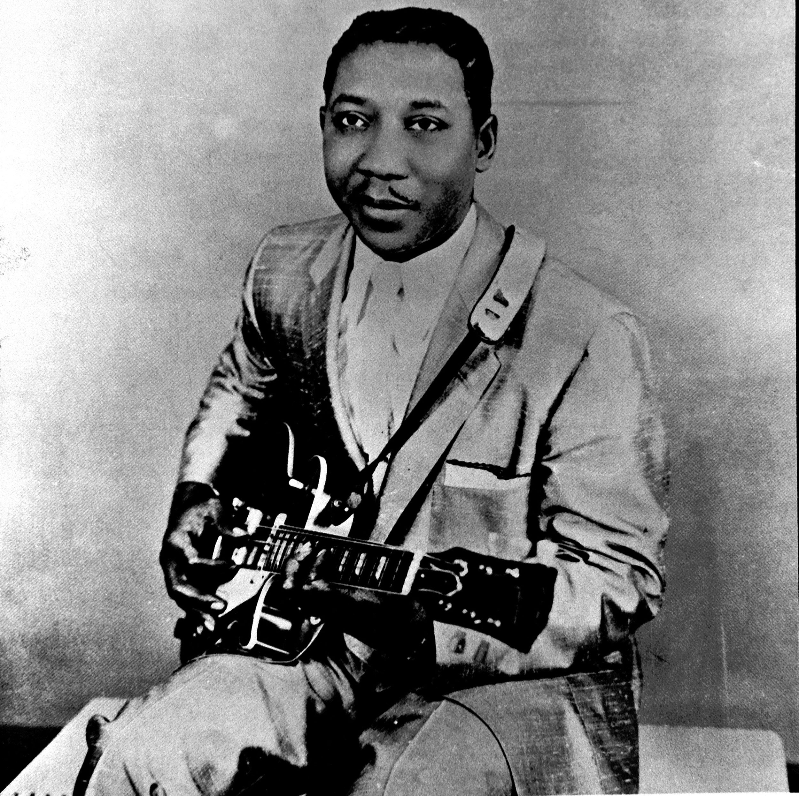
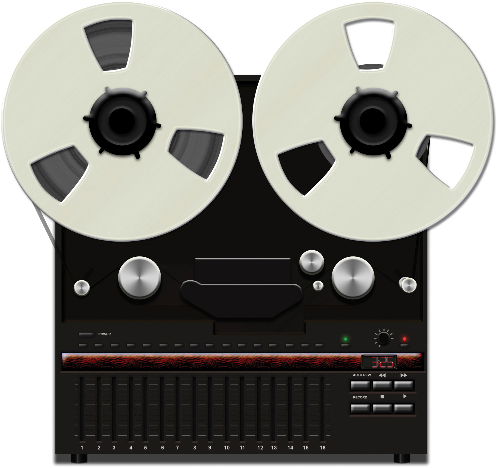
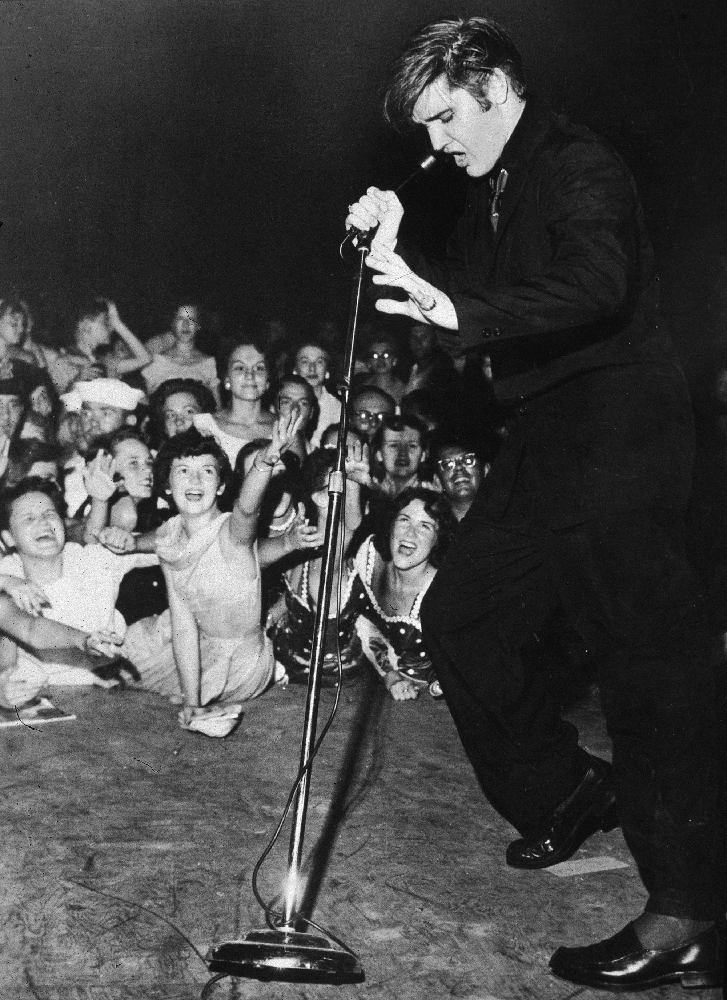
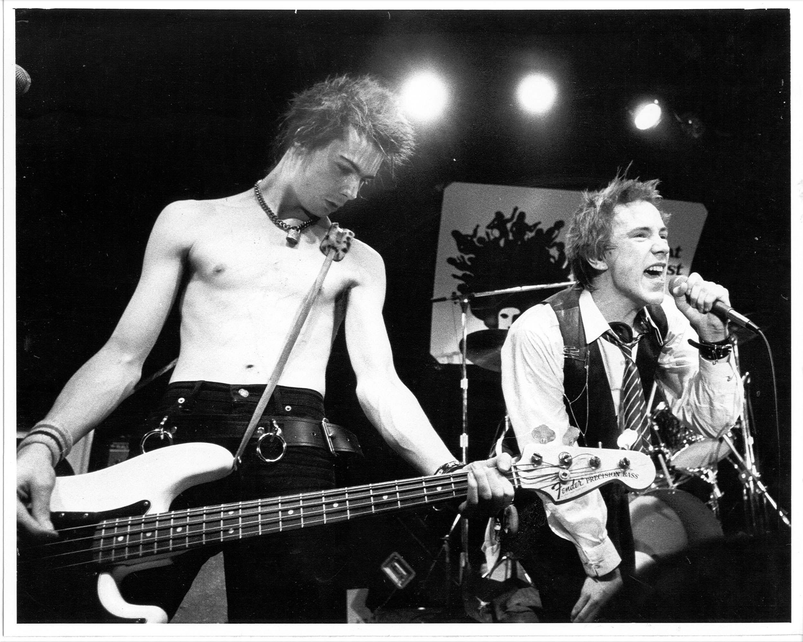
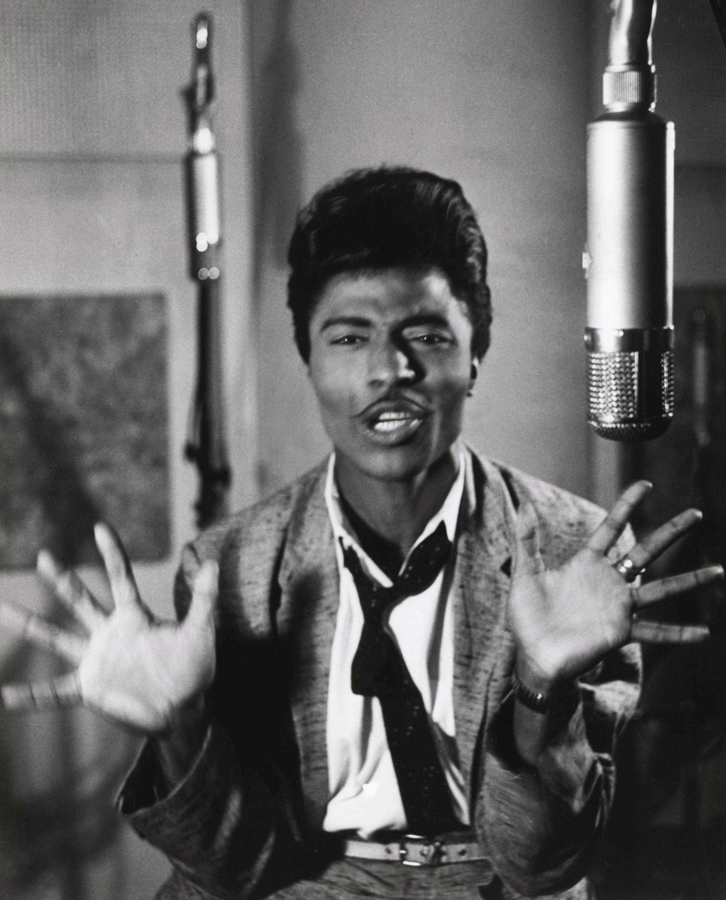
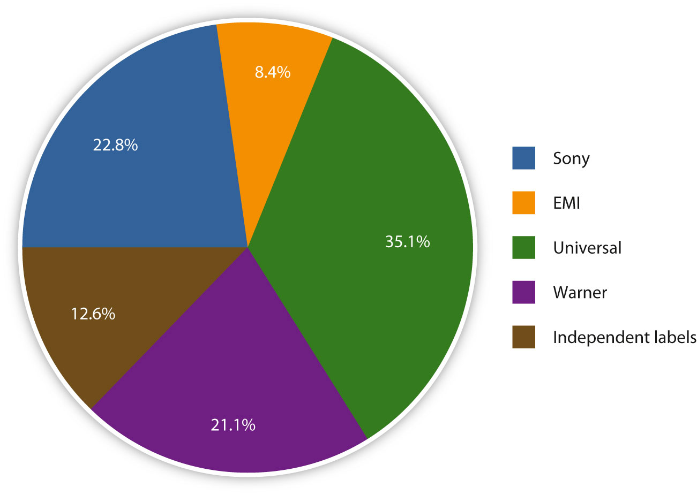
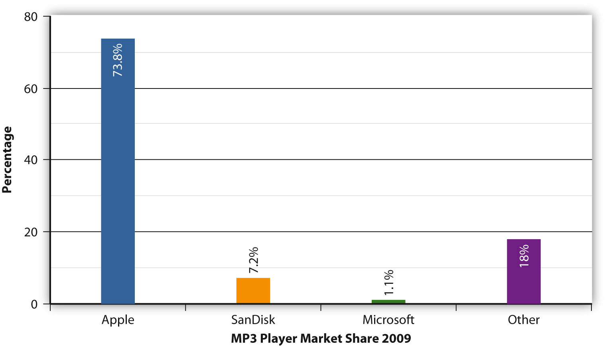
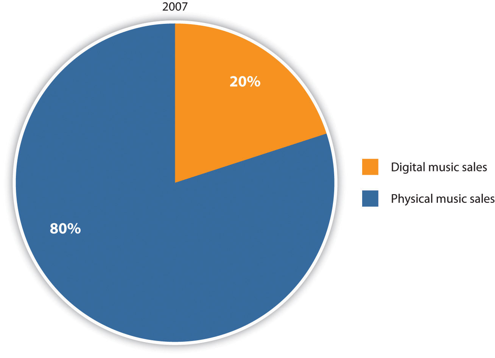

Figure 6.1

In 2006, Californian vocalist Colbie Caillat was an aspiring singer-songwriter. Although her audio engineer father, Ken Caillat, coproduced one of the biggest selling albums of all time, Fleetwood Mac’s Rumours, Colbie had never considered booking a studio, much less campaigning for a record deal. She considered her music to be a hobby rather than a career choice.“Colbie Caillat Turns Hobby into Billboard Success, Will Perform at Baylor’s Diadeloso,” Waco Tribune-Herald, April 15, 2010, http://www.wacotrib.com/accesswaco/arts/Colbie-Caillat-turns-hobby-into-Billboard-success-will-perform-at-Baylors-Diadeloso.html. Fast-forward a year later and Caillat’s debut album, Coco, was at No. 5 on the Billboard 200 album chart, on its way to achieving platinum status. How did an unknown artist from Malibu, California, become a best-selling star in so little time? Caillat’s success can be attributed, in part, to the social networking website MySpaceA social networking service geared toward younger users..
Hugely popular among teens and young adults in the mid-2000s, MySpace enables people to set up a personal profile on which they can post original music for the public to listen to and comment on. One of Caillat’s friends thought that her music merited a wider audience and set up a page on which Caillat could post her tunes. Six months later, Caillat was the MySpace website’s top unsigned artist.“Colbie Caillat,” ColbieCaillat.com, http://www.colbiecaillat.com/colbie. The site enables people to “friend” artists or performers whose music they enjoy. As Caillat’s friend count climbed to 100,000, music labels began to notice. In 2007, she signed with Universal Records and released her debut album, Coco. Boosted by the online success of the single “Bubbly,” Coco reached No. 5 on the Billboard chart and established Caillat as a bona fide pop star. She has since won a Grammy award for “Lucky,” her duet with Jason Mraz, toured with artists such as the Goo Goo Dolls and John Mayer, and in 2009, released a second successful album, Breakthrough. The combined sales of Caillat’s first two albums are upward of 4 million copies worldwide.
Caillat’s story highlights one area in which the Internet is changing the face of the music industry. Aspiring artists no longer need to rely on expensive publicists, recording studios, or contacts within the industry; they can connect directly with fans to sell their music. Social networking sites, like MySpace, and virtual worlds, like Second Life, make it easier for fans to search for new music and easier for artists to communicate with fans. In fact, MySpace has been so influential that it teamed with several major labels to create the MySpace music website. Generating a buzz on social networking sites is sometimes enough to achieve fame and stardom. Of course, for every Colbie Caillat, there are thousands of unknown singers and bands trying to promote their music online with little or no success. Despite this, it’s clear that social networking sites have taken some control away from record labels and placed it in the hands of the artists themselves.
Artists are also using social networking sites to develop a more intimate relationship with fans. In the past couple of years, the Twitter social networking website has become hugely popular among musicians and fans alike. The microblogging service enables users to send a tweet message—a short post of 140 characters or less that is displayed on the author’s profile page and delivered to his or her subscribers. Musicians such as John Mayer, Alicia Keys, Britney Spears, and Lily Allen regularly post on Twitter, providing their fans with real-time updates about their daily lives and promoting their musical endeavors.
Social networking sites are just the latest technological development in the music business. An in-depth look at the history and evolution of popular music throughout the last century will help explain some of the current processes and trends in the industry.
The first stirrings of popular or pop music—any genre of music that appeals to a wide audience or subculture—began in the late 19th century, with discoveries by Thomas Edison and Emile Berliner. In 1877, Edison discovered that sound could be reproduced using a strip of tinfoil wrapped around a rotating metal cylinder. Edison’s phonographA 19th-century sound reproduction machine that originally recorded onto a tinfoil sheet wrapped around a cylinder. provided ideas and inspiration for Berliner’s gramophoneThe U.S. brand name for the phonograph; the gramophone used a disc instead of a cylinder., which used flat discs to record sound. The flat discs were cheaper and easier to produce than were the cylinders they replaced, enabling the mass production of sound recordings. This would have a huge impact on the popular music industry, enabling members of the middle class to purchase technology that was previously available only to an elite few. Berliner founded the Berliner Gramophone Company to manufacture his discs, and he encouraged popular operatic singers such as Enrico Caruso and Dame Nellie Melba to record their music using his system. Opera singers were the stars of the 19th century, and their music generated most of the sheet music sales in the United States. Although the gramophone was an exciting new development, it would take 20 years for disc recordings to rival sheet music in commercial importance.John Shepherd, Continuum Encyclopedia of Popular Music of the World (New York: Continuum, 2003), 483.
In the late 19th century, the lax copyright laws that existed in the United States at the beginning of the century were strengthened, providing an opportunity for composers, singers, and publishers to work together to earn money by producing as much music as possible. Numerous publishers began to emerge in an area of New York that became known as Tin Pan AlleyA term used to refer to the area in Manhattan in which singer-songwriter and publisher teams worked in the early 20th century.. Allegedly named because the cacophony of many pianos being played in the publishers’ demo rooms sounded like people pounding on tin pans, Tin Pan Alley soon became a prolific source of popular music, with its publishers mass-producing sheet music to satisfy the demands of a growing middle class. Whereas classical artists were exalted for their individuality and expected to differ stylistically from other classical artists, popular artists were praised for conforming to the tastes of their intended audience. Popular genres expanded from opera to include vaudevilleA popular form of variety entertainment in the early 20th century that included singing acts, magicians, comedians, and acrobats.—a form of variety entertainment containing short acts featuring singers, dancers, magicians, and comedians that opened new doors for publishers to sell songs popularized by the live shows—and ragtimeA jazzy style of piano music characterized by a syncopated melody that was influenced by offbeat dance music and music., a style of piano music characterized by a syncopated melody.
Figure 6.2

For most of the 20th century, gramophone records were the primary medium used for commercial music reproduction.
The Tin Pan Alley tradition of song publishing continued throughout the first half of the 20th century with the show tunes and soothing ballads of Irving Berlin, Cole Porter, and George Gershwin, and songwriting teams of the early 1950s, such as Jerry Leiber and Mike Stoller. By hiring songwriters to compose music based on public demand and mainstream tastes, the Tin Pan Alley publishers introduced the concept of popular music as we know it.
In the 1920s, Tin Pan Alley’s dominance of the popular music industry was threatened by two technological developments: the advent of electrical recording and the rapid growth of radio.
During the early days of its development, the gramophone was viewed as a scientific novelty that posed little threat to sheet music because of its poor sound quality. However, as inventors improved various aspects of the device, the sales of gramophone records began to affect sheet music sales. The Copyright Act of 1911 had imposed a royalty on all records of copyrighted musical works to compensate for the loss in revenue to composers and authors. This loss became even more prominent during the mid-1920s, when improvements in electrical recording drastically increased sales of gramophones and gramophone records. The greater range and sensitivity of the electrical broadcasting microphone revolutionized gramophone recording to such an extent that sheet music sales plummeted. From the very beginning, the record industry faced challenges from new technology.
Composers and publishers could deal with the losses caused by an increase in gramophone sales because of the provisions made in the Copyright Act. However, when radio broadcasting emerged in the early 1920s, both gramophone sales and sheet-music sales began to suffer. Radio was an affordable medium that enabled listeners to experience events as they took place. Better yet, it offered a wide range of free music that required none of the musical skills, expensive instruments, or sheet music necessary for creating one’s own music in the home, nor the expense of purchasing records to play on the gramophone. This development was a threat to the entire recording industry, which began to campaign for, and was ultimately granted, the right to collect license fees from broadcasters. With the license fees in place, the recording industry eventually began to profit from the new technology.
Figure 6.3

Radio sales dramatically increased throughout the 1920s because radios were an affordable way to listen to free music and live events.
The ascendance of Tin Pan Alley coincided with the emergence of jazzAn improvisational style of music that emerged in New Orleans in the 1930s, characterized by syncopation and heavily accented rhythms. in New Orleans. An improvisational form of music that was primarily instrumental, jazz incorporated a variety of styles, including African rhythms, gospel, and blues. Established by New Orleans musicians such as King Oliver and his protégé, Louis Armstrong, who is considered by many to be one of the greatest jazz soloists in history, jazz spread along the Mississippi River by the bands that traveled up and down the river playing on steamboats. During the Prohibition era in the 1920s and early 1930s, some jazz bands played in illegal speakeasies, which helped generate the genre’s reputation for being immoral and for threatening the country’s cultural values. However, jazz became a legitimate form of entertainment during the 1930s, when white orchestras began to incorporate jazz style into their music. During this time, jazz music began to take on a big band style, combining elements of ragtime, black spirituals, blues, and European music. Key figures in developing the big jazz band included bandleaders Duke Ellington, Coleman Hawkins, and Glenn Miller. These big band orchestras used an arranger to limit improvisation by assigning parts of a piece of music to various band members. Although improvisation was allowed during solo performances, the format became more structured, resulting in the swing style of jazz that became popular in the 1930s. As the decade progressed, social attitudes toward racial segregation relaxed and big bands became more racially integrated.
At the heart of jazz, the bluesA 12-bar musical form with a call-and-response format between the singer and his guitar that originated in the Mississippi Delta at the turn of the 20th century. was a creation of former black slaves who adapted their African musical heritage to the American environment. Dealing with themes of personal adversity, overcoming hard luck, and other emotional turmoil, the blues is a 12-bar musical form with a call-and-response format between the singer and his guitar. Originating in the Mississippi Delta, just upriver from New Orleans, blues music was exemplified in the work of W. C. Handy, Ma Rainey, Robert Johnson, and Lead Belly, among others. Unlike jazz, the blues did not spread significantly to the Northern states until the late 1930s and 1940s. Once Southern migrants introduced the blues to urban Northern cities, the music developed into distinctive regional styles, ranging from the jazz-oriented Kansas City blues to the swing-based West Coast blues. Chicago blues musicians such as Muddy Waters were the first to electrify the blues through the use of electric guitars and to blend urban style with classic Southern blues. The electric guitar, first produced by Adolph Rickenbacker in 1931, changed music by intensifying the sound and creating a louder volume that could cut through noise in bars and nightclubs.“Early Years: The Earliest Days of the Electric Guitar,” Rickenbacker International Corporation, June 22, 2010, http://www.rickenbacker.com/history_early.asp; Mary Bellis, “The History of Guitar and Electric Guitar,” About.com Guide, http://inventors.about.com/od/gstartinventions/a/guitar_2.htm. By focusing less on shouting, singers could focus on conveying more emotion and intimacy in their performances. This electrified form of blues provided the foundations of rock and roll.
Figure 6.4
The Chicago blues, characterized by the use of electric guitar and harmonica, provided the foundations of rock and roll. Muddy Waters was one of the most famous Chicago blues musicians.
The 1920s through the 1950s is considered the golden age of radio. During this time, the number of licensed radio stations in the United States exploded from 5 in 1921 to over 600 by 1925.Ed Salamon, Pittsburgh’s Golden Age of Radio (Chicago: Arcadia, 2010), 8. The introduction of radio broadcasting provided a valuable link between urban city centers and small, rural towns. Able to transmit music nationwide, rural radio stations broadcast local music genres that soon gained popularity across the country.
Technological advances during the 1940s made it even easier for people to listen to their favorite music and for artists to record it. The introduction of the reel-to-reel tape recorder paved the way for several innovations that would transform the music industry. The first commercially available tape recorders were monophonic, meaning that they only had one track on which to record sound onto magnetic tape. This may seem limiting today, but at the time it allowed for exciting innovations. During the 1940s and 1950s, some musicians—most notably guitarist Les Paul, with his song “Lover (When You’re Near Me)”—began to experiment with overdubbing, in which they played back a previously recorded tape through a mixer, blended it with a live performance, and recorded the composite signal onto a second tape recorder. By the time four-track and eight-track recorders became readily available in the 1960s, musicians no longer had to play together in the same room; they could record each of their individual parts and combine them into a finished recording.
Figure 6.5
Reel-to-reel tape recorders and magnetic tape not only helped artists experiment with overdubbing, but they also were a compact method for reproducing and preserving audio.
While the reel-to-reel recorders were in the early stages of development, families listened to records on their gramophones. The 78 revolutions per minute (rpm) disc had been the accepted recording medium for many years despite the necessity of changing the disc every 5 minutes. In 1948, Columbia Records perfected the 12-inch 33 rpm long-playing (LP) disc, which could play up to 25 minutes per side and had a lower level of surface noise than the earlier (and highly breakable) shellac discs.Alan Lomax, Alan Lomax: Selected Writings 1934–1997, ed. Ronald D. Cohen (New York: Routledge, 2003), 102. The 33 rpm discs became the standard form for full albums and would dominate the recorded music industry until the advent of the compact disc (CD).
During the 1940s, a mutually beneficial alliance between sound recording and radio existed. Artists such as Frank Sinatra and Ella Fitzgerald profited from radio exposure. Until this time, music had primarily been recorded for adults, but the popularity of Sinatra and his contemporaries revealed an entirely untapped market: teenagers. The postwar boom of the 1930s and early 1940s provided many teenagers spending money for records. Radio airplay helped to promote and sell records and the recording artists themselves, which in turn stabilized the recording industry. The near riots caused by the appearance of New Jersey crooner Frank Sinatra in concert paved the way for mass hysteria among Elvis Presley and Beatles fans during the rock and roll era.
New technology continued to develop in the 1950s with the introduction of television. The new medium spread rapidly, primarily because of cheaper mass-production costs and war-related improvements in technology. In 1948, only 1 percent of America’s households owned a television; by 1953 this figure had risen to nearly 50 percent, and by 1978 nearly every home in the United States owned a television.Tom Genova, “Number of TV Households in America,” Television History – The First 75 Years, http://www.tvhistory.tv/Annual_TV_Households_50-78.JPG. The introduction of television into people’s homes threatened the existence of the radio industry. The radio industry adapted by focusing on music, joining forces with the recording industry to survive. In an effort to do so, it became somewhat of a promotional tool. Stations became more dependent on recorded music to fill airtime, and in 1955 the Top 40 format was born. Playlists for radio stations were based on popularity (usually the Billboard Top 40 singles chart), and a popular song might be played as many as 30 or 40 times a day. Radio stations began to influence record sales, which resulted in increased competition for spots on the playlist. This ultimately resulted in payolaThe illegal practice of receiving money from record companies for playing particular songs on the radio.—the illegal practice of receiving payment from a record company for broadcasting a particular song on the radio. The payola scandal came to a head in the 1960s, when Cleveland, Ohio, DJ Alan Freed and 8 other disc jockeys were accused of taking money for airplay. Following Freed’s trial, an antipayola statute was passed, making payola a misdemeanor crime.
Technology wasn’t the only revolution that took place during the 1950s. The urban Chicago blues typified by artists such as Muddy Waters, Howlin’ Wolf, and B. B. King surged in popularity among white and black teenagers alike. Marketed under the name rhythm and bluesA combination of blues and jazz that was a precursor to rock and roll., or R&B, the sexually suggestive lyrics in songs such as “Sexy Ways” and “Sixty Minute Man” and the electrified guitar and wailing harmonica sounds appealed to young listeners. At the time, R&B records were classified as “race music” and their sales were segregated from the white music records tracked on the pop charts.David Szatmary, Rockin’ in Time: A Social History of Rock and Roll (Upper Saddle River, NJ: Prentice Hall, 2010), 16. Nonetheless, there was a considerable amount of crossover among audiences. In 1952, the Dolphin’s of Hollywood record store in Los Angeles, which specialized in R&B music, noted that 40 percent of its sales were to white individuals.David Szatmary, Rockin’ in Time: A Social History of Rock and Roll (Upper Saddle River, NJ: Prentice Hall, 2010), 16.
Although banned from some stations, others embraced the popular new music. In 1951, Freed started a late-night R&B show called The Moondog Rock & Roll House Party and began referring to the music he played as rock and rollA blend of rhythm and blues, country and western, folk, and gospel music that developed in the 1950s..“Alan Freed” History-of-rock.com, http://www.history-of-rock.com/freed.htm. Taking its name from a blues slang term for sex, the music obtained instant notoriety, gaining widespread support among teenage music fans and widespread dislike among the older generation.“Alan Freed” History-of-rock.com, http://www.history-of-rock.com/freed.htm. Frenetic showmen Little Richard and Chuck Berry were early pioneers of rock and roll, and their wild stage performances became characteristic of the genre. As the integration of white and black individuals progressed in the 1950s with the repeal of segregation laws and the initiation of the civil rights movement, aspects of black cultures, including music, became more widely accepted by many white individuals. However, it was the introduction of a white man who sang songs written by black musicians that helped rock and roll really spread across state and racial lines. Elvis Presley, a singer and guitarist, the “King of Rock and Roll,” further helped make music written by black individuals acceptable to mainstream white audiences and also helped popularize rockabilly—a blend of rock and country music—with black audiences during the mid-1950s. Heavily influenced by his rural Southern roots, Presley combined the R&B music of bluesmen B. B. King, John Lee Hooker, and Howlin’ Wolf with the country-western tradition of Roy Acuff, Ernest Tubb, and Jimmie Rodgers, and added a touch of gospel.“Biography,” Elvis Presley: Official Site of the King of Rock ’n’ Roll, http://www.elvis.com/about-the-king/biography_.aspx. The reaction Presley inspired among hordes of adolescent girls—screaming, crying, rioting—solidified his reputation as the first true rock and roll icon.
Figure 6.6
Elvis Presley brought the style of R&B bluesmen to mainstream audiences in the 1950s.
Prior to 1964, rock and roll was primarily an American export. Although U.S. artists frequently reached the top of the charts overseas, few European artists achieved success on this side of the Atlantic. This situation changed almost overnight, with the arrival of British pop phenomenon the Beatles. Combining elements of skiffle—a type of music played on rudimentary instruments, such as banjos, guitars, or homemade instruments—doo-wop, and soul, the four mop-haired musicians from Liverpool, England, created a genre of music known as MerseybeatTerm used to describe the music of bands originating in the Mersey area of England during the 1960s, e.g. the Beatles., named after the River Mersey. The Beatles’ genial personalities and catchy pop tunes made them an instant success in the United States, and their popularity was heightened by several appearances on The Ed Sullivan Show. When the Beatles arrived in New York in 1964, they were met by hundreds of reporters and police officers and thousands of fans. Their appearance on The Ed Sullivan Show a few days later was the largest audience for an American television program, with approximately one in three Americans (74 million) tuning in.Jonathan Gould, Can’t Buy Me Love: The Beatles, Britain, and America (New York: Harmony Books, 2007), 3–4. Beatlemania—the term coined to describe fans’ wildly enthusiastic reaction to the band—extended to other British bands, and by the mid-1960s, the Kinks, the Zombies, the Animals, Herman’s Hermits, and the Rolling Stones were all making appearances on the U.S. charts. The Rolling Stones’s urban rock sound steered away from pop music and remained more true to the bluesy, R&B roots of rock and roll. During their first appearance on The Ed Sullivan Show, the Stones were lewd and vulgar, prompting host Ed Sullivan to denounce their behavior (although he privately acknowledged that the band had received the most enthusiastic applause he had ever seen).“The Rolling Stones,” The Official Ed Sullivan Site, http://www.edsullivan.com/artists/the-rolling-stones. The British Invasion transformed rock and roll into the all-encompassing genre of rock, sending future performers in two different directions: the melodic, poppy sounds of the Beatles, on the one hand, and the gritty, high-volume power rock of the Stones on the other.
Figure 6.7

After the Rolling Stones’ first appearance on The Ed Sullivan Show, host Ed Sullivan apologized to the viewing audience for the band’s lewd behavior.
The branching out of rock and roll continued in several other directions throughout the 1960s. Surf musicCarefree, hedonistic music that developed around the California surf culture in the 1960s and is characterized by twanging, distorted electric guitar sounds., embodied by artists such as the Beach Boys, Jan and Dean, and Dick Dale, celebrated the aspects of youth culture in California. With their twanging electric guitars and glossy harmonies, the surf groups sang of girls, beaches, and convertible cars cruising along the West Coast. In Detroit, some black performers were developing a sound that would have crossover appeal with both black and white audiences. Combining R&B, pop, gospel, and blues into a genre known as soulA blend of R&B, pop, gospel, and blues music., vocalists such as James Brown, Aretha Franklin, Otis Redding, and Wilson Pickett sang about the lives of black Americans. Producer and songwriter Berry Gordy Jr. developed soul music through the creation of his MotownSuccessful record label founded by Berry Gordy Jr. in Detroit; the Motown sound is characterized by smooth, soulful R&B tunes. label, which would become one of the most successful businesses owned by a black individual in American history.“Berry Gordy Jr. Biography,” Encyclopedia of World Biography, http://www.notablebiographies.com/Gi-He/Gordy-Jr-Berry.html. Capitalizing on the 1960s girl-group craze, Gordy produced hits by the Marvelettes, Martha and the Vandellas, and, most successfully, Diana Ross and the Supremes. For his bands, he created a slick, polished image designed to appeal to the American mainstream.
In the late 1960s, supporters of the civil rights movement—along with feminists, environmentalists, and Vietnam War protesters—were gravitating toward folkUnpolished genre of music based on oral traditions and often associated with the social protest movement of the 1960s. music, which would become the sound of social activism. Broadly referring to music that is passed down orally through the generations, folk music retained an unpolished, amateur quality that inspired participation and social awareness. Carrying on the legacy of the 1930s labor activist Woody Guthrie, singer-songwriters such as Joan Baez; Peter, Paul, and Mary; and Bob Dylan sang social protest songs about civil rights, discrimination against black Americans, and the Cuban Missile Crisis. Having earned himself a reputation as a political spokesperson, Dylan was lambasted by traditional folk fans for playing an electric guitar at the 1965 Newport Folk Festival. However, his attempt to reach a broader crowd inspired the folk rockFolk music played with electric instruments. genre, pioneered by the Los Angeles band the Byrds“Bob Dylan,” PBS.org: American Roots Music: The Songs & the Artists, http://www.pbs.org/americanrootsmusic/pbs_arm_saa_bobdylan.html.. Even though many fans questioned his decision to go electric, Dylan’s poetic and politically charged lyrics were still influential, inspiring groups like the Beatles and the Animals. Protest music in the 1960s was closely aligned with the hippie culture, in which some viewed taking drugs as a form of personal expression and free speech. Artists such as Jimi Hendrix, Jefferson Airplane, the Grateful Dead, and the Doors believed that the listening experience could be enhanced using mind-altering drugs.Dwight Rounds, The Year the Music Died: 1964–1972: A Commentary on the Best Era of Pop Music, and an Irreverent Look at the Musicians and Social Movements of the Time (Austin: Bridgeway Books, 2007), 292. This spirit of freedom and protest culminated in the infamous Woodstock festival in the summer of 1969, although the subsequent deaths of many of its stars from drug overdoses cast a shadow over the psychedelic culture.
After the Vietnam War ended, college students began to settle down and focus on careers and families. For some selfish views took the place of concern with social issues and political activism, causing writer Tom Wolfe to label the 1970s the “me” decade.Tom Wolfe, “The ‘Me’ Decade and the Third Great Awakening,” New York Magazine, August 23, 1976, http://nymag.com/news/features/45938/. Musically, this ideological shift resulted in the creation of glam rockExtravagant, self-indulgent form of rock that incorporated flamboyant costumes, heavy makeup, and elements of hard rock and pop., an extravagant, self-indulgent form of rock that incorporated flamboyant costumes, heavy makeup, and elements of hard rock and pop. A primarily British phenomenon, glam rock was popularized by acts such as Slade, David Bowie, the Sweet, Elton John, and Gary Glitter. It proved to be a precursor for the punk movement in the late 1970s. Equally flamboyant, but rising out of a more electronic sound, discoCommercialized dance music that became popular in the 1970s and is associated with extravagant glittery costumes. also emerged in the 1970s. Popular disco artists included KC and the Sunshine Band, Gloria Gaynor, the Bee Gees, and Donna Summer, who helped to pioneer its electronic sound. Boosted by the success of 1977 film Saturday Night Fever, disco’s popularity spread across the country. Records were created especially for discos, and record companies churned out tunes that became huge hits on the dance floor.
Reacting against the commercialism of disco and corporate rock, punkMinimalist, angry form of rock that includes simple chord structures and often includes politically motivated lyrics. artists created a minimalist, angry form of rock that returned to rock and roll basics: simple chord structures, catchy tunes, and politically motivated lyrics. Like the skiffle bands of the 1950s, the appeal of punk rock was that anyone with basic musical skills could participate. The punk rock movement emerged out of CBGB, a small bar in New York City that featured bands such as Television, Blondie, and the Ramones. Never a huge commercial success in the United States, punk rock exploded in the United Kingdom, where high unemployment rates and class divisions had created angry, disenfranchised youths.“Making ends meet in the 70s,” BBC News Magazine, June 7, 2007, http://news.bbc.co.uk/2/hi/uk_news/magazine/6729847.stm. The Sex Pistols, fronted by Johnny Rotten, developed an aggressive, pumping sound that appealed to a rebellious generation of listeners, although the band was disparaged by many critics at the time. In 1976, British music paper Melody Maker complained that “the Sex Pistols do as much for music as World War II did for the cause of peace.”Marcus Gray, The Clash: Return of the Last Gang in Town (London: Helter Skelter, 2001), 147. Punk bands began to abandon their sound in the late 1970s, when the punk style became assimilated into the rock mainstream.
Figure 6.8
Even though the Sex Pistols were severely criticized in the 1970s, their music went on to inspire countless acts and helped develop the underground music scene in England and the United States.
Whereas many British youths expressed their displeasure through punk music, many disenfranchised black American youths in the 1980s turned to hip-hopUrban culture that incorporates activities such as break dancing and graffiti art with the musical techniques of rapping, sampling, and scratching records.—a term for the urban culture that includes break dancing, graffiti art, and the musical techniques of rapping, sampling, and scratching records. Reacting against the extravagance of disco, many poor urban rappers developed their new street culture by adopting a casual image consisting of T-shirts and sportswear, developing a language that reflected the everyday concerns of the people in low-income, urban areas, and by embracing the low-budget visual art form of graffiti. They described their new culture as hip-hop, after a common phrase chanted at dance parties in New York’s Bronx borough.
The hip-hop genre first became popular among black youths in the late 1970s, when record spinners in the Bronx and Harlem started to play short fragments of songs rather than the entire track (known as sampling).Joanna Demers, “Sampling the 1970s in Hip-Hop,” Popular Music 21 (2003): 41–56. Early hip-hop artists sampled all types of music, like funk, soul, and jazz, later adding special effects to the samples and experimenting with techniques such as rotating or scratching records back and forth to create a rhythmic pattern. For example, Kool Moe Dee’s track “How Ya Like Me Now” includes samples from James Brown’s classic funk song “Papa’s Got a Brand New Bag.” The DJs would often add short raps to their music to let audiences know who was playing the records, a trend that grew more elaborate over time to include entire spoken verses. Artists such as Grandmaster Flash and the Furious Five added political and social commentary on the realities of life in low-income, high-crime areas—a trend that would continue with later rappers such as Public Enemy and Ice-T.
Figure 6.9

Early hip-hop artists, like Run-D.M.C., opposed the clean-cut, polished world of soul and pop by embracing political lyrics that were inspired by everyday life.
In the early 1980s, a second wave of rap artists brought inner-city rap to American youths by mixing it with hard guitar rock. Pioneered by groups such as Run-D.M.C. and the Beastie Boys, the new music appealed to black and white audiences alike. Another subgenre that emerged was gangsta rapControversial form of hip-hop that highlights gang violence., a controversial brand of hip-hop epitomized by West Coast rappers such as Ice Cube and Tupac Shakur. Highlighting violence and gang warfare, gangsta rappers faced accusations that they created violence in inner cities—an argument that gained momentum with the East Coast–West Coast rivalry of the 1990s.
Hip-hop and gangsta rap maintained their popularity in the early 1990s with artists such as Tupac Shakur, the Notorious B.I.G., Dr. Dre, Eazy-E, Ice Cube, and Snoop Dogg at the top of the charts. West Coast rappers such as Tupac Shakur and Snoop Dogg favored gangsta rap, while East Coast rappers, like the Notorious B.I.G. and Sean Combs, stuck to a traditional hip-hop style. The rivalry culminated with the murders of Shakur in 1996 and B.I.G. in 1997.
Figure 6.10


The shooting deaths of gangsta rappers Tupac Shakur and the Notorious B.I.G. caused a shift in the hip-hop industry toward less violent music.
Along with hip-hop and gangsta rap, alternative rock came to the forefront in the 1990s with grunge. The grungeSubgenre of alternative rock named for its characteristic sludgy, distorted guitar sound. scene emerged in the mid-1980s in the Seattle area of Washington State. Inspired by hardcore punk and heavy metal, this subgenre of rock was so-called because of its messy, sludgy, distorted guitar sound, the disheveled appearance of its pioneers, and the disaffected nature of the artists. Initially achieving limited success with Seattle band Soundgarden, Seattle independent label Sub Pop became more prominent when it signed another local band, Nirvana. Fronted by vocalist and guitarist Kurt Cobain, Nirvana came to be identified with Generation X—the post–baby boom generation, many of whom came from broken families and experienced violence both on television and in real life. Nirvana’s angst-filled lyrics spoke to many members of Generation X, launching the band into the mainstream. Ironically, Cobain was uncomfortable and miserable, and he would eventually commit suicide in 1994. Nirvana’s success paved the way for other alternative rock bands, including Green Day, Pearl Jam, and Nine Inch Nails. More recently, alternative rock has fragmented into even more specific subgenres.
Figure 6.11

Britney Spears was one of the driving forces behind the teen-pop phenomena of the late 1990s, paving the way for pop stars Christina Aguilera and Pink.
By the end of the 1990s, mainstream tastes leaned toward pop music. A plethora of boy bands, girl bands, and pop starlets emerged, sometimes evolving from gospel choir groups, but more often than not created by talent scouts. The groups were aggressively marketed to teen audiences. Popular bands included the Backstreet Boys, ’N Sync, and the Spice Girls. Meanwhile, individual pop acts from the MTV generation such as Madonna, Michael Jackson, and Prince continued to generate hits.
The 2000s began right where the 1990s left off, with young singers such as Christina Aguilera and Destiny’s Child ruling the pop charts. Pop music stayed strong throughout the decade with Gwen Stefani, Mariah Carey, Beyoncé, Katy Perry, and Lady Gaga achieving mainstream success. By the end of the decade, country artists, like Carrie Underwood and Taylor Swift, transitioned from country stars to bona fide pop stars. While rock music started the decade strong, by the end of the 2000s, rock’s presence in mainstream music had waned, with a few exceptions such as Nickelback, Linkin Park, and Green Day.
Figure 6.12

Taylor Swift’s 2008 album Fearless went multiplatinum, and hits like “You Belong to Me” and “Love Story” helped her go from country star to mainstream pop star.
Unlike rock music, hip-hop maintained its popularity, with more commercial, polished artists such as Kanye West, Jay-Z, Lupe Fiasco, and OutKast achieving enormous success. While some gangsta rappers from the 1990s—like Dr. Dre and Snoop Dogg—softened their images, other rappers—such as 50 Cent and Eminem—continued to project a tough image and to use violent lyrics. An alternative style of hip-hop emerged in the 2000s that infused positive messages and an element of social conscience to the music that was missing from early hip-hop tracks. Artists such as Common, Mos Def, and the Black Eyed Peas found success even though they didn’t represent traditional stereotypes of hip-hop.
Choose a decade between 1900 and 2010. Research a technological development that took place during this time that influenced pop music—for example, the development of the electric guitar and its influence on rock and roll. Consider how this development influenced trends within the industry.
The tightknit relationship between music and culture is almost impossible to overstate. For example, policies on immigration, war, and the legal system can influence artists and the type of music they create and distribute. Music may then influence cultural perceptions about race, morality, and gender that can, in turn, influence the way people feel about those policies.
The evolution of popular music in the United States in the 20th century was shaped by a myriad of cultural influences. Rapidly shifting demographics brought previously independent cultures into contact and also created new cultures and subcultures, and music evolved to reflect these changes. Among the most important cultural influences on music are migration, the evolution of youth culture, and racial integration.
One of the major cultural influences on the popular music industry over the past century is migration. In 1910, 89 percent of black Americans still lived in the South, most of them in rural farming areas.Richard Weingroff, “Highway History: The Road to Civil Rights: The Black Migration,” U.S. Department of Transportation Federal Highway Administration, April 7, 2011, http://www.fhwa.dot.gov/highwayhistory/road/s10.cfm. Three years later, a series of disastrous events devastated the cotton industry. World cotton prices plummeted, a boll weevil beetle infestation destroyed large areas of crops, and in 1915, flooding destroyed many of the houses and crops of farmers along the Mississippi River. Already suffering from the restrictive “Jim Crow” laws that segregated schools, restaurants, hotels, and hospitals, black sharecroppers began to look to the North for a more prosperous lifestyle. Northern states were enjoying an economic boom as a result of an increased demand for industrial goods because of the war in Europe. They were also in need of labor because the war had slowed the rate of foreign immigration to Northern cities. Between 1915 and 1920, as many as 1 million black individuals moved to Northern cities in search of jobs, closely followed by another million throughout the following decade.“Racial Tensions in Omaha: African American Migration” Nebraskastudies.org, June 25, 2010, http://www.nebraskastudies.org/0700/stories/0701_0131.html. The mass exodus of black farmers from the South became known as the Great MigrationThe mass exodus of rural Southern Black individuals to urban Northern cities in the United States during the first half of the 20th century., and by 1960, 75 percent of all Black Americans lived in cities.“The Great Migration,” Emerging Minds, January 31, 2005, http://emergingminds.org/The-Great-Migration.html. The Great Migration had a huge impact on political, economic, and cultural life in the North, and popular music reflected this cultural change.
Figure 6.13
During the Great Migration, the 12 states in blue had the largest population growth of black individuals, while the states in red had the 10 largest net losses.Elizabeth Anne Martin, “Detroit and the Great Migration, 1916–1929,” Bentley Historical Library, University of Michigan, http://bentley.umich.edu/research/publications/migration/ch1.php.
Some of the black individuals who moved to Northern cities came from the Mississippi DeltaRegion in northwest Mississippi, home of the Delta blues style of music., home of the blues. The most popular destination was Chicago. Delta-born pianist Eddie Boyd later told Living Blues magazine, “I thought of coming to Chicago where I could get away from some of that racism and where I would have an opportunity to, well, do something with my talent…. It wasn’t peaches and cream, man, but it was a hell of a lot better than down there where I was born.”David Szatmary, Rockin’ in Time: A Social History of Rock and Roll (Upper Saddle River, NJ: Prentice Hall, 2010), 4. At first, the migrants brought their style of country blues to the city. Characterized by the guitar and the harmonica, the Delta blues was identified by its rhythmic structure and strong vocals. Migrant musicians were heavily influenced by Delta blues musicians such as Charley Patton and legendary guitarist Robert Johnson. However, as the urban setting began to influence the migrants’ style, they started to record a hybrid of blues, vaudeville, and swing, including the boogie-woogie and rolling-bass piano. Mississippi-born guitarist Muddy Waters, who moved to Chicago in the early 1940s, revolutionized the blues by combining his Delta roots with an electric guitar and amplifier. He did so partly out of necessity, since he could barely make himself heard in crowded Chicago clubs with an acoustic guitar.“Chicago Blues Guitar Story,” ChicagoBluesGuitar.com, http://www.chicagobluesguitar.com. Waters’s style was peppier and more buoyant than the sullen country blues. His plugged-in electric blues became the hallmark of the Chicago bluesElectrified style of blues created in Chicago when migrant bluesmen from the South combined elements of Delta blues and urban blues. style, influencing countless other musicians and creating the underpinnings of rock and roll. Other migrant bluesmen helped to create regional variations of the blues all around the country, including John Lee Hooker in Detroit, Michigan, and T-Bone Walker in Los Angeles, California.
Prior to 1945, most music was created with adults in mind, and teenage musical tastes were barely a consideration. Young adults had few freedoms—most males were expected to join the military or get a job to support their fledgling families, while most females were expected to marry young and have children. Few young adults attended college, and personal freedom was limited. Following World War II, this situation changed drastically. A booming economy helped create an American middle class, which created an opening for a youth consumer culture. Unsavory memories of the war discouraged some parents from forcing their children into the military, and many emphasized enjoying life and having a good time. As a result, teenagers found they had a lot more freedom. This new liberalized culture allowed teenagers to make decisions for themselves, and, for the first time, many had the financial means to do so. Whereas many adults enjoyed the traditional sounds of Tin Pan Alley, teens were beginning to listen to rhythm and blues songs played by radio disc jockeys such as Alan Freed. Increased racial integration within the younger generation made them more accepting of black musicians and their music, which was considered “cool,” and provided a welcome escape from the daunting political and social tension caused by Cold War anxieties. The wide availability of radios, juke boxes, and 45 rpm records exposed this new style of rock and roll music to a broad teenage audience.
Figure 6.14

The popularity of American Bandstand made host Dick Clark an influential tastemaker in pop music.
Once teenagers had the buying power to influence record sales, record companies began to notice. Between 1950 and 1959, record sales in the United States skyrocketed from $189 million to nearly $600 million.David Szatmary, Rockin’ in Time: A Social History of Rock and Roll (Upper Saddle River, NJ: Prentice Hall, 2010), 57. The 45 rpm vinyl records that were introduced in the late 1940s were an affordable option for teens with allowances. Dick Clark, a radio presenter in Philadelphia, soon tuned in to the new teenage tastes. Sensing an opportunity to tap in to a potentially lucrative market, he acquired enough advertising support to turn local hit music telecast Bandstand into a national television phenomenon.
Figure 6.15

Teen heartthrob Fabian was molded to fit teenage musical tastes in order to maximize record sales.
The result was the launch of American Bandstand in 1957, a music television show that featured a group of teenagers dancing to current hit records. The show’s popularity prompted record producersThe person in charge of the overall recording process, from contracting session musicians to overseeing the budget. A producer is usually a talented musician with knowledge of the technical processes in the recording studio. to create a legion of rock and roll acts specifically designed to appeal to a teenage audience, including Fabian and Frankie Avalon.William Grimes, “Bob Marcucci, 81, Backer of Fabian and Frankie Avalon,” New York Times, March 18, 2011, http://query.nytimes.com/gst/fullpage.html?res=9A01EEDA1E3EF93BA25750C0A9679D8B63. During its almost 40-year run, American Bandstand was a prominent influence on teenage fashions and musical tastes and, in turn, reflected the contemporary youth culture.
Following the Great Migration, racial tensions increased in Northern cities. Whereas many Northerners had previously been unconcerned with the issue of race relations in the South, they found themselves confronted with the very real issue of having to compete for jobs with black migrant workers. Black workers found themselves pushed into undesirable neighborhoods, often living in crowded, unsanitary slums where they were charged exorbitant rates by unscrupulous landlords. During the 1940s, racial tensions boiled over into race riots, most notably in Detroit. The city’s 1943 riot caused the deaths of 34 people, 25 of whom were black.Brenda J. Gilcrest, “Detroit’s 1943 Race Riot, 50 Years Ago Today, Still Seems Too Near,” Detroit Free Press, June 20, 1993.
Frustrated with inequalities in the legal system that distinguished black and white individuals, members of the civil rights movementThe 1950s and 1960s political movement that pushed to end racial segregation and gain equal rights for black Americans. pushed for racial equality. In 1948, an executive order granted by President Harry Truman integrated the military. The move toward equality gained further momentum in 1954, with the U.S. Supreme Court decision to end segregationThe post–Civil War separation of black and white individuals. Segregation was maintained by “Jim Crow” laws, which forbade interracial marriage and forced business owners and public institutions to keep their black and white clientele separated. in public schools in the landmark case Brown v. Board of Education. The civil rights movement escalated throughout the late 1950s and early 1960s, aided by highly publicized events such as Rosa Parks’s refusal to give up her seat on a bus to a white passenger in Montgomery, Alabama, in 1955. In 1964, Congress passed the most sweeping civil rights legislation since the Civil War, forbidding discrimination in public places and authorizing financial aid to enable school desegregation.
Although racist attitudes did not change overnight, the cultural changes brought on by the civil rights movement laid the groundwork for the creation of an integrated society. The Motown sound developed by Berry Gordy Jr. in the 1960s both reflected and furthered this change. Gordy believed that by coaching talented but unpolished black artists, he could make them acceptable to mainstream culture. He hired a professional to head an in-house finishing school, teaching his acts how to move gracefully, speak politely, and use proper posture.“Berry Gordy Jr.,” Michigan Rock and Roll Legends,” http://www.michiganrockandrolllegends.com/Default.aspx?name=BERRYGORDY. Gordy’s commercial success with gospel-based pop acts such as the Supremes, the Temptations, the Four Tops, and Martha and the Vandellas reflected the extent of racial integration in the mainstream music industry. Gordy’s most successful act, the Supremes, achieved 12 No. 1 singles on the Billboard Hot 100 chart.
Figure 6.16

The commercial success of Motown girl group the Supremes reflected changing attitudes toward race in the United States.
Even though pop music is frequently characterized as a negative influence on society, particularly with respect to youth culture, it also has positive effects on culture. Many artists in the 1950s and 1960s pushed the boundaries of socially acceptable behavior with sexually charged movements and androgynous appearances. Without these precedents, acts like the Rolling Stones or David Bowie may have never made the transition into mainstream success.
On the other hand, over the past 50 years, critics have blamed rock and roll for juvenile delinquency, heavy metal for increased teenage aggression, and gangsta rap for a rise in gang warfare among young urban males. One recent study claimed that youths who listen to music with sexually explicit lyrics were more likely to have sex at an early age, stating that exposure to lots of sexually degrading music gives teens “a specific message about sex.”Associated Press, “Dirty Song Lyrics Can Prompt Early Teen Sex,” MSNBC, August 7, 2006, http://www.msnbc.msn.com/id/14227775/. In addition to its effects on youth culture, popular music has contributed to shifting cultural values regarding race, morality, and gender.
As the music of Chuck Berry and Little Richard gained popularity among white teens in the United States during the 1950s, most of the new rock acts were signed to independent labels, and larger companies such as RCA were losing their share of the market.
To capitalize on the public’s enthusiasm for rock and roll and to prevent the loss of further potential profits, big record companies signed white artists to cover the songs of black artists. The songs were often censored for the mainstream market by the removal of any lyrics that referenced sex, alcohol, or drugs. Pat Boone was the most successful cover artist of the era, releasing songs originally sung by artists such as Fats Domino, the El Dorados, Little Richard, and Big Joe Turner. Releasing a cover of a black performer’s song by a white performer was known as hijackingThe practice of releasing a cover version of a song by a white artist on the heels of a hit by a black performer. a hit, and this practice usually left black artists signed to independent labels broke. Because large companies such as RCA could widely promote and distribute their records—six of Boone’s recordings reached the No. 1 spot on the Billboard chart—their records frequently outsold the original versions. Many white artists and producers would also take writing credit for the songs they covered and would buy the rights to songs from black writers without giving them royaltiesMoney received by songwriters and publishers every time one of their songs is played on a radio station, television show, film soundtrack, or other for-profit arena. Performance royalties are tracked by performing rights organizations, which collect fees on the publisher’s behalf. or songwriting credit. This practice fueled racism within the music industry. Independent record producer Danny Kessler of Okeh Records said, “The odds for a black record to crack through were slim. If the black record began to happen, the chances were that a white artist would cover—and the big stations would play the white records…. There was a color line, and it wasn’t easy to cross.”David Szatmary, Rockin’ in Time: A Social History of Rock and Roll (Upper Saddle River, NJ: Prentice Hall, 2010), 26.
Although cover artists profited from the work of black R&B singers, occasionally they also helped to promote the original recordings. Many teenagers who heard covers on mainstream radio stations sought out the original artists’ versions, increasing sales and prompting Little Richard to refer to Pat Boone as “the man who made me a millionaire.”Dan Crane, “Cover Me: Introducing the Instant Tribute,” New York Times, March 27, 2005, http://www.nytimes.com/2005/03/27/arts/music/27cran.html. Benefiting from covers also worked both ways. In 1962, soul singer Ray Charles covered Don Gibson’s hit “I Just Can’t Stop Loving You,” which became a hit on country and western charts and furthered mainstream acceptance of black musicians. Other black artists to cover hits by white performers included Otis Redding, who performed the Rolling Stones hit “Satisfaction,” and Jimi Hendrix, who covered Bob Dylan’s “All Along the Watchtower.”
Releasing cover versions of hit songs was fairly standard practice before the 1950s because it was advantageous for songwriters and producers to have as many artists as possible sing their records to maximize royaltiesMoney received by songwriters and publishers every time a song is reproduced by another artist. Mechanical royalties are paid to whoever owns the copyright for a particular song, which is usually split between the writer and publisher.. Several versions of the same song often appeared in the music charts at the same time. However, the practice acquired racial connotations during the 1950s when larger music labels hijacked R&B hits, using their financial strength to promote the cover version at the expense of the original recording, which often exploited black talent. As a result, many 1950s R&B artists lost out on royaltiesThe money received by an artist for every unit of music sold. The rate is negotiated in the artist’s recording contract..
Two contemporary black performers who were victims of this practice were R&B singer LaVern Baker and blues singer Arthur “Big Boy” Crudup. Baker, who was signed with then small-time label Atlantic Records, had been promoted as a pop singer. Because her songs appealed to mainstream audiences, they were ideal for covering, and industry giant Mercury Records took full advantage of this. When Baker released her 1955 hit “Tweedle Dee,” Mercury immediately put out its own version, a note-for-note cover sung by white pop singer Georgia Gibbs. Atlantic could not match Mercury’s marketing budget, and Gibbs’ version outsold Baker’s recording, causing her to lose an estimated $15,000 in royalties.Jon Parales, “LaVern Baker is Dead at 67; A Rhythm-and-Blues Veteran,” New York Times, March 12, 1997, http://www.nytimes.com/1997/03/12/arts/lavern-baker-is-dead-at-67-a-rhythm-and-blues-veteran.html.
Around the same time, Arthur Crudup was producing hits such as “So Glad You’re Mine,” “Who’s Been Foolin’ You,” “That’s All Right Mama,” and “My Baby Left Me,” which were subsequently released by performers such as Elvis Presley, Creedence Clearwater Revival, and Rod Stewart for huge financial gain, Crudup’s songs made everybody rich—except him. This realization caused him to quit playing altogether in the late 1950s. A later attempt to collect back royalties was unsuccessful.Scott Stanton, The Tombstone Tourist; Musicians (New York: Simon & Schuster, 1998), 67. Baker filed a lawsuit in an attempt to revise the Copyright Act of 1909, making it illegal to copy an arrangement verbatim without permission. The lawsuit was unsuccessful, and Gibbs continued to cover Baker’s songs.Bill Dahl, “LaVern Baker,” allmusic, http://www.allmusic.com/artist/lavern-baker-p3619/biography.
When Elvis Presley burst onto the rock and roll scene in the mid-1950s, any conservative parents of teenagers all over the United States were horrified. With his gyrating hips and sexually suggestive body movements, Presley was viewed as a threat to the moral well-being of young women. Television critics denounced his performances as vulgar, and on a 1956 appearance on The Ed Sullivan Show, cameras filmed him only from the waist up. One critic for the New York Daily News wrote that popular music “has reached its lowest depths in the ‘grunt and groin’ antics of one Elvis Presley.”Dan Collins, “How Big Was the King?” CBS News, August 7, 2002, http://www.cbsnews.com/stories/2002/08/07/entertainment/main517851.shtml. Despite the critics’ opinions, Presley immediately gained a fan base among teenage audiences, particularly adolescent girls, who frequently broke into hysterics at his concerts. Rather than tone down his act, Presley defended his movements as manifestations of the music’s rhythm and beat and continued to gyrate on stage. Liberated from the constraints imposed by morality watchdogs, Presley set a precedent for future rock and roll performers and marked a major transition in popular culture.
In addition to decrying raunchy onstage performances by rock and roll artists, moralists in the conservative Eisenhower era objected to the sexually suggestive lyrics found in original rock and roll songs. Big Joe Turner’s version of “Shake, Rattle, and Roll” used sexual phrases and referred to the bedroom, while Little Richard’s original version of “Tutti Frutti” contained the phrase “tutti frutti, loose booty.”Dennis Hall and Susan G. Hall, American Icons: An Encyclopedia of the People, Places, and Things That Have Shaped Our Culture Volume 1 (Greenwood, 2006), 134. Although many of these lyrics were sanitized for mainstream white audiences when they were rereleased as cover versions, the idea that rock and roll was a threat to morality had been firmly implanted in many people’s minds.
Ironically, many of the controversial key figures in the rock and roll era came from extremely religious backgrounds. Presley was a member of the evangelical First Assembly of God Church, where he acquired his love of gospel music.“Elvis Presley,” History-of-rock.com, http://www.history-of-rock.com/elvis_presley.htm. Similarly, Ray Charles soaked up gospel influences from his local Baptist church.“Ray Charles,” Hollywood Walk of Fame, http://www.walkoffame.com/ray-charles. Jerry Lee Lewis came from a strict Christian background and often struggled to reconcile his religious beliefs with the moral implications of the music he created. During a recording session in 1957, Lewis argued with manager Sam Phillips that the hit song “Great Balls of Fire” was too “sinful” for him to record.“Jerry Lee Lewis Records ‘Great Balls of Fire’ in Memphis, Tennessee,” History.com: This Day in History: October 8, 1957, http://www.history.com/this-day-in-history/jerry-lee-lewis-records-quotgreat-balls-of-firequot-in-memphis-tennessee. The religious backgrounds of the rock and roll pioneers both influenced and challenged moral norms. When Ray Charles recorded “I Got a Woman” in 1955, he reworded the gospel tune “Jesus Is All the World to Me,” drawing criticism that the song was sacrilegious. Despite the objections, Charles’s style caught on with other musicians, and his experimentation with merging gospel and R&B resulted in the birth of soul music.
While Presley was revolutionizing people’s notions of sexual freedom and expression, other performers were changing cultural norms regarding gender identity. Dressed in flamboyant clothing with a pompadour hairstyle and makeup, Little Richard was an exotic, androgynous performer who blurred traditional gender boundaries and shocked 1950s audiences with his blatant campiness. Between his wild onstage antics, bisexual tendencies, and love of post-concert orgies, the self-proclaimed “King and Queen of Rock and Roll” challenged many social conventions of the time.Peter Buckley, The Rough Guide to Rock (Rough Guides, 2003), 603–604. Little Richard’s flamboyant, gender-bending appearance was so outrageous that it was not taken seriously during the 1950s—he was considered an entertainer whose androgynous look bore no relevance to the real world. However, Richard paved the way for future entertainers to shift cultural perceptions of gender. Later musicians such as David Bowie, Prince, and Boy George adopted his outrageous style, frequently appearing on stage wearing glittery costumes and heavy makeup. The popularity of these 1970s and 1980s pop idols, along with other gender-bending performers such as Annie Lennox and Michael Jackson, helped make androgyny more acceptable in mainstream society.
Figure 6.17
Little Richard. Gender-bending performers such as Little Richard, David Bowie, Boy George, and Prince helped to change social attitudes toward androgyny.
David Bowie
Boy George

Prince
Choose a genre of popular music from the last century. Using the ideas in this section as a starting point, examine ways in which your chosen genre has influenced aspects of culture and ways in which cultural aspects have affected the genre’s development.
In Weezer’s 2008 song “Pork and Beans,” vocalist Rivers Cuomo sings, “Timbaland knows the way to reach the top of the charts/Maybe if I work with him I can perfect the art.”“Weezer, ‘(If You’re Wondering If I Want You To) I Want You’ Sessions,” AOL Music Sessions, http://music.aol.com/sessions/weezer-if-youre-wondering-if-i-want-you-to-i-want-you-sessions/. The lyrics, a reference to hip-hop producer Timbaland’s multiple high-profile collaborations, are an angry reaction to a meeting between Cuomo and record executives at the band’s Geffen label. During the meeting, the executives told the band members they needed to write more commercial material, prompting a defiant (though commercially successful) response.Bryan Reesman, “Weezer Goes into the Red on New CD,” Mix, September 1, 2008, http://mixonline.com/recording/tracking/music-weezer/. The incident is a reflection of the balance between commercial success and artistic expression in the music industry. Record labels need artists that inspire the record-buying public, while artists need the financial backing and expertise of record labels and their marketing teams. In recent years, tensions between artists and their labels have been heightened by the cost-cutting measures that have taken place at many companies due to the impact of online file sharing on profits.
During the 1990s, the record industry was booming. Music lovers were busy replacing their cassette tapes and vinyl records with CDs, and sales were high. In 1999, the total revenue from music sales and licensing peaked at $14.6 billion.David Goldman, “Music’s Lost Decade: Sales Cut in Half,” CNN, February 3, 2010, http://money.cnn.com/2010/02/02/news/companies/napster_music_industry/index.htm. Ten years later, record label executives were not as successful. Revenue had plunged to $6.3 billion, with the Recording Industry Association of America (RIAA) reporting declining revenue in 9 of the 10 previous years, with album sales dropping an average of 8 percent every year.David Goldman, “Music’s Lost Decade: Sales Cut in Half,” CNN, February 3, 2010, http://money.cnn.com/2010/02/02/news/companies/napster_music_industry/index.htm. Why the drastic decline? Experts agree that the primary culprit is the growing popularity of digital music, which initially began through peer-to-peer file sharingThe practice of swapping media files over the Internet.—the process of swapping media files over the Internet—such as the Napster service.
Despite a massive loss in profits over the past decade, the global music business still comprises a powerful oligopolyA market condition in which a few firms dominate an industry’s production and distribution.—a market condition in which a few firms dominate most of an industry’s production and distribution. The global reach of these few companies means that they have the promotion and marketing muscle to determine which types of music reach listeners’ ears and which become obsolete. Each of the major record labels has a strong infrastructure that oversees every aspect of the music business, from production, manufacture, and distribution to marketing and promotion.
Between 1950 and 1980, a large number of major record labels and numerous independent labels competed for a share of the musical pie. Gradually, the larger labels began buying up the independent labels, and then started trying to purchase each other. By the late 1990s, only six major labels remained: Warner, Universal, Sony, BMG, EMI, and Polygram. In 1998, Universal acquired Polygram, and 6 years later Sony and BMG merged. Sony later bought out BMG to obtain sole ownership of the company. Currently, the music industry is dominated by the so-called Big FourTerm used in the music industry to refer to the four major record labels: Universal Music Group, EMI, Warner Music Group, and Sony Music Entertainment.: Sony Music Entertainment, EMI, Universal Music Group, and Warner Music Group. The Big Four control over 85 percent of the U.S. recording music industry.“The Big Four Record Companies,” Copyright Law, Treaties and Advice, http://www.copynot.org/Pages/The%20big%20four%20Record%20Companies.html. Figure 6.11 shows a graph of the current distribution of market share.
Figure 6.18
Four major music labels control over 85 percent of the U.S. recording music industry.
In 2004, Japanese-owned Sony Music Entertainment (part of Sony) and German-owned BMG Entertainment (part of Bertelsmann) merged to create Sony BMG. The joint venture was a bid to overcome weak retail sales, online file sharing, and fierce competition from rival forms of media.Reuters, “Sony, BMG Agree on Music Merger,” CNN World Business, November 7, 2003, http://edition.cnn.com/2003/BUSINESS/11/06/sony.bmg.reut/. Independent music companies opposed the merger in Europe, arguing that it created a market imbalance, but the European Commission upheld its decision to allow the consolidation. In 2008, Sony bought out BMG’s 50 percent stake for $1.2 billion.David Kaplan, “Sony Buys Bertelsmann’s 50 Percent Stake In Sony BMG for $1.2 Billion,” PaidContent.org: The Economics of Digital Content, http://paidcontent.org/article/419-sony-buys-back-bertelsmanns-50-percent-stake-in-sony-bmg-company-rename/. The company now has full ownership of the second-largest record label in the world. Subsidiary labels owned by Sony include Arista, Columbia, Epic, Jive, RCA, and Zomba, and the company represents numerous artists, including Alicia Keys, Ke$ha, and Sade.
The EMI Group is a British company, most famous for introducing the Beatles to the world through its Parlaphone subsidiary. Originally formed in 1931, through a merger of the UK Columbia Gramophone Company and the Gramophone Company, the money-losing company was taken over in 2007 by private equity firm Terra Firma Capital Partners Ltd. for $6.5 billion.Anne-Sylvaine Chassany, “Terra Firma Sues Citi over EMI Takeover,” Bloomberg Businessweek, December 18, 2009, http://www.businessweek.com/globalbiz/content/dec2009/gb20091218_584654.htm. In an attempt to return the company to profit following the deal, Terra Firma head Guy Hands began slashing costs, eliminating more than 1,000 jobs in the process.Julia Finch, Owen Gibson, and Alex Needham, “Radiohead Quit, Robbie Williams on Strike—and Now 1,000 Jobs Cut,” Guardian (London), January 12, 2008, http://www.guardian.co.uk/media/2008/jan/12/robbiewilliams.emi. Following the takeover, several high-profile artists quit the label, including Radiohead, who described the new management structure as “a confused bull in a china shop.”Julia Finch, Owen Gibson, and Alex Needham, “Radiohead Quit, Robbie Williams on Strike—and Now 1,000 Jobs Cut,” Guardian (London), January 12, 2008, http://www.guardian.co.uk/media/2008/jan/12/robbiewilliams.emi. As of 2010, the struggling company, which represents artists such as Coldplay, Lily Allen, and Pink Floyd, faces being taken over by its bankers after failing to secure a deal to sell its North American distribution rights to one of the other major labels.Associated Press, “Music Group EMI Facing Bank Takeover After Talks Fall Apart,” Los Angeles Daily News, April 2, 2010, http://www.dailynews.com/business/ci_14805128.
Originally launched as Warner Bros. Records in 1958, the Warner Music Group gained momentum during the 1960s and 1970s with the purchase of several important new labels, including Elektra and Atlantic. Like the other major labels, the company began to suffer from declining sales due to the advent of free online music swapping. In 2004, Time Warner decided to abandon its record label and offloaded its music division to an investor group so that it could focus on more profitable areas, such as Time Warner Cable. The $2.6 billion deal included more than 800 artists, including Linkin Park, Metallica, and Kid Rock, as well as the group’s publishing arm, Warner/Chapell Music, which owned more than a million copyrights.David Vise, “Time Warner Sells Music Unit to Bronfman for $2.6B,” Washington Post, November 24, 2003, http://www.washingtonpost.com/ac2/wp-dyn/A9806-2003Nov24.
After a brief period of independence, Warner Music Group went public in 2005, making the company the only stand-alone music company to be publically traded in the United States. To prepare for its public offering, the company made around $250 million in cuts through layoffs and consolidation.Jeff Leeds, “A Band Makes Its Case against Record Label,” New York Times, May 9, 2005, http://www.nytimes.com/2005/05/09/arts/music/09linkin.html. The move caused concern among the label’s artists that investors’ interests would take priority over performers’ interests and prompted rock-rap group Linkin Park to demand an early release from its contract with Warner. Guitarist Brad Delson characterized the company as “bad news,” adding, “[w]e don’t want to be around to see what happens.”Jeff Leeds, “A Band Makes Its Case against Record Label,” New York Times, May 9, 2005, http://www.nytimes.com/2005/05/09/arts/music/09linkin.html. The band eventually worked out a lucrative new deal with the company. As of 2010, Warner Music Group is considering the possibility of purchasing EMI should the struggling company fail to meet its debt repayments.Jonathan Sibun, “KKR and Warner Music Talk Over Break-Up Bid for EMI,” Telegraph (London), March 14, 2010, http://www.telegraph.co.uk/finance/newsbysector/retailandconsumer/7443456/KKR-and-Warner-Music-talk-over-break-up-bid-for-EMI.html.
The largest of the Big Four record labels, Universal Music Group established itself as an industry giant in 1998, with the merger of PolyGram and Universal. Both companies already owned numerous subsidiaries, and the merger of the two entertainment conglomerates created the largest music company in the world. Wholly owned by French international media firm Vivendi since 2006, the company has gone on to acquire BMG Music Publishing and Univision Music Group, among smaller labels. Its acquisition of U.K. labels Sanctuary Music Group and V2 in 2007 drew criticisms from the independent sector that the recording giant was heading toward a monopoly.Adam Sherwin, “Indies Accuse Universal of Gaining Monopoly” Times (London), October 1, 2007, http://business.timesonline.co.uk/tol/business/industry_sectors/media/article2563208.ece. The Association of Independent Music claimed that the deals would “further marginalize a vibrant independent sector, serving to stifle competition and narrow consumer choice.”Adam Sherwin, “Indies Accuse Universal of Gaining Monopoly” Times (London), October 1, 2007, http://business.timesonline.co.uk/tol/business/industry_sectors/media/article2563208.ece. Despite the objections, both deals went ahead.
Universal Music Group’s catalog of artists includes U2, Amy Winehouse, Lady Gaga, Taylor Swift, and the Black Eyed Peas. Despite its powerful status, the company has suffered from declining sales of physical products along with the rest of the music industry. As of 2010, UMG plans to lure customers back to purchasing physical CDs by lowering prices to under $10 (the average price of a digitally purchased album).Anna Swindle, “Universal Music Group Plans to Lower CD Prices,” Paste, March 23, 2010, http://www.pastemagazine.com/articles/2010/03/post-69.html.
In addition to the four major record labels, independent production companies, or indie record labelsIndependent record companies, also known as indies, not affiliated with any of the Big Four., operate without the financial assistance of one of the Big Four (although in recent years, the definition has shifted to incorporate indies that are partially owned by one of the major labels). Ranging from small grassroots or garage labels to large, profitable businesses, indie labels typically produce music that is less commercially viable and more eclectic than the music produced by the larger mainstream companies.
Independent labels have played a small but significant role in the music industry for as long as there has been a market. When patents held on sound recording technologies entered the public market in the 1920s, opportunities arose for small recording companies to enter the business. To avoid competing with larger firms such as RCA and Edison, the new independent companies focused on neglected areas of the music industry, such as folk, gospel, and rural blues. When the major labels decided during World War II to abandon then-unprofitable music recorded by black artists, the independent labels quickly rushed in to fill the void, enjoying a boom during the rock and roll era when R&B music soared in popularity. Between 1955 and 1959, the U.S. market share of the major companies had dropped from 78 percent to 44 percent, while the market share of independent companies rose from 22 percent to 56 percent.“Rock and Roll Timeline,” The History of Rock ’n’ Roll, October 15, 2009, http://www.history-of-rock.com/rock_and_roll_timeline.htm. Sun Records played a particularly important role in the development of both rock and roll and country music by releasing records by Elvis Presley, Jerry Lee Lewis, Johnny Cash, and Roy Orbison.
During the 1970s punk era, indie labels profited from the antimainstream, anticorporate attitude of many punk rock bands, which disassociated themselves from the major labels. The indie-rock movement grew throughout the 1980s and 1990s, with labels such as Sub Pop, I.R.S., and Epitaph and epitomized by the music of the Smiths, the Stone Roses, R.E.M., and the Jesus and Mary Chain. This movement was known as “college rock,” which would later become alternative rock. However, as alternative rock grew in popularity, grunge bands such as Nirvana, Soundgarden, and Pearl Jam broke into the mainstream. This attracted the attention of major record labels, which began to look at the music with a commercially oriented approach. Many artists found themselves faced with a dilemma: stay true to their indie roots or “sell out” to a major record label in the hope of financial gain.
When Seattle grunge band Nirvana began to achieve success in the late 1980s, they were signed to independent label Sub Pop. Popular among college students, the band’s 1989 album Bleach sold well enough for the band to consider moving to a bigger label. Amid rumors that Sub Pop was planning on signing as a subsidiary of a major record company because of financial difficulties, the band decided to cut out the middleman and seek a new contract itself.Chris Norris, “Ghost of Saint Kurt,” Spin, April 2004, 57–63. Signing with DGC Records (an imprint of Geffen), Nirvana released Nevermind in 1991 and found itself thrust into the mainstream. Within 9 months of its release, the album had sold more than 4 million copies (compared to 30,000 copies of Bleach), knocked Michael Jackson’s Dangerous from the top of the Billboard chart, and placed Nirvana at the forefront of public attention.
For Sub Pop, Nirvana’s success was both a blessing and a curse. Under severe financial stress, the label had begun layoffs in the spring of 1991, reducing its staff of 25 to a core group of five employees.Sub Pop Records, “About Us,” April 2, 2008, http://www.subpop.com/about. With the royalties it received from Nevermind, along with the buyout from Nirvana’s contract, and potential royalties from any future albums, Sub Pop was pulled back from the brink of collapse. However, the carefully crafted niche that Sub Pop had found in the music industry vanished. Eager to discover the next big thing in grunge, major labels began scoping out Seattle bands, offering them large advances against which the smaller independent companies could not compete. Sub Pop chief Bruce Pavitt said of one band, “I was told by our head A&R agentTalent agent working on behalf of a record label who finds and develops new artists with commercial potential. that they would be happy with a $5,000 advance. Two months later we were giving them a check for $150,000.”Sub Pop Records, “About Us,” April 2, 2008, http://www.subpop.com/about. In 1995, the company sold 49 percent of its shares to Warner Bros in exchange for financial backing.
Nirvana had equally ambivalent feelings about the transition from a small independent label to a major record company. At a concert shortly after the band signed their deal with DGC, lead singer Kurt Cobain declared to the crowd, “Hello, we’re major-label corporate rock sellouts.”Benjamin Kunkel, “Stupid and Contagious,” New York Times, May 6, 2007, http://www.nytimes.com/2007/05/06/books/review/Kunkel.t.html. Having spent several years among the anticommercial, do-it-yourself grunge crowd in Seattle, the band’s members were uncomfortable with their new position as wealthy rock stars.
Although they frequently lose their talent to industry heavyweights, indie labels hold several advantages over major record companies. They are generally smaller, enabling them to respond to changing popular musical tastes more quickly than large companies with more cumbersome processes and procedures in place. This enables them to pick up on emerging trends and bring them to market quickly. Although unable to compete with the distribution and promotion power of the major labels, indie labels can focus on niche markets, tapping into regional trends. For example, hip-hop’s initial commercial successes in the late 1970s and early 1980s came through small independent labels such as Tommy Boy and Sugar Hill. Realizing that record executives would find the raw street version of hip-hop unworkable, the labels came up with the idea of using house bands to play with emcees to improve the commercial viability of the genre. An early example of this process was Sugarhill Gang’s “Rapper’s Delight,” which was a worldwide hit.Rhome Anderson, “Hip to Hip-Hop,” Washington Post, February 19, 2006, http://www.washingtonpost.com/wp-dyn/content/article/2006/02/16/AR2006021602077.html.
Figure 6.19
Artists who have switched from an independent label to a major label midway through their careers include Green Day, Nirvana, and Death Cab for Cutie.
The nature of the independent production process may also prove advantageous. A shorter path from creation of the music to distribution and promotion makes it easier to maintain the artist’s original vision. For this reason, many artists prefer to work with independent labels, believing the final product to be more authentic. This argument is also used by some fans of independent labels, who trust companies that only produce one brand of music to adhere to a consistent sound and musical style.
A popular trend among major record labels is to allow high-profile recording artists to front their own indie labels with the financial backing of the larger company. Frequently referred to as vanity labelsSpin-off indie labels financially backed by one of the major record companies and headed by high-profile artists to create a “label within a label.”, these are spin-offs of the parent company that enable artists to run “a label within a label” and release music by other performers that they admire. Examples include Madonna’s Maverick, Trent Reznor’s Nothing, and Michael Jackson’s MJJ. Allowing an artist to create a vanity label benefits a major record label in several ways: It encourages artists to remain with the parent company for longer than they may have otherwise done, it reduces the amount of promotional effort required by the label because fans are likely to be attracted to new music based on the recommendation of favorite artists, and it increases the likelihood that bands in niche genres will become big moneymakers for the company.
However, vanity label projects often prove risky and unsuccessful because the label provides all of the money while the proven artist is responsible for developing new acts, and recent losses in the music industry have caused major labels to cut funding for artist-run ventures. For example, Mariah Carey’s label, Crave, ended up dissolving less than a year after it opened. In 2004, Universal Records President Monte Lipman commented, “Back in the day, when the industry was a lot healthier, it was ‘OK, here’s $2–$3million. Go start your label and let us know when you’re ready to start your first act.’ Those days are absolutely over.”Associated Press, “Record Cos. Wary of Vanity Label Deals,” Jacksonville (FL) First Coast News, June 28, 2004, http://www.firstcoastnews.com/news/strange/news-article.aspx?storyid=20660.
Draw a T-chart. Label the left-hand column Major Record Labels and the right-hand column Independent Record Labels. Using the information in this chapter, your own knowledge, and further Internet research, list the advantages held by each type of label in the music industry. Consider the size and structure of each type of company, financial issues, artist preferences, and the impact of digital distribution.
Major Record Labels |
Independent Record Labels |
|---|---|
|
|
In the mid-1990s, CD sales were booming. Cassette tapes were all but obsolete, and record companies were reaping the benefits of sales to consumers who wanted their music collections in the latest technological format. This boom was a familiar step in the evolution of technology. In past decades, records seemed to have an ironclad lock on sales, but they were eventually passed by cassette sales. Cassettes, as previously mentioned, were then passed by CD sales. However, despite a few advantages in quality and convenience, there were several areas in which CDs were lacking. They were expensive for consumers to purchase, and consumers had to buy a full album even if they were only interested in listening to one or two songs on it because every album came as a complete package.
At the height of the CD revolution, new digital technology was being developed that would eliminate these disadvantages and revolutionize digital music storage. In 1989, German company Fraunhofer-Gesellshaft discovered how to compress digital audio to approximately one-tenth the size of the original audio with almost no discernable loss in quality to the average listener. Small enough to be transmitted over a modem, the so-called MP3 filesCompressed digital audio files that are small enough to transfer over the Internet while maintaining high audio quality. (the MP stands for Moving Pictures Experts Group, which is the group that sets the standard for audio and video compression and transmission, and the 3 refers to the most popular layer or scheme with the standard) could be downloaded onto a website or FTP site in a relatively short amount of time. Initially done only by a tech-savvy elite, the process of downloading and sharing audio files was a painstaking process because MP3 files were not in one centralized location. Peer-to-peerA communications model in which participants access shared files on each other’s computers via the Internet. file sharing—the process in which two or more computer systems are connected over the Internet for the purpose of sharing music or video files—became a worldwide phenomenon in 1999 with the development of centralized online file-sharing system Napster.
In 1999, Northeastern University student Shawn Fanning dropped out of school to complete work on a software project that would simplify finding and downloading MP3 files on the Internet.T. C. Doyle, “Shawn Fanning, Founder, Napster,” CRN, November 10, 2000, http://www.crn.com/news/channel-programs/18834885/shawn-fanning-founder-napster.htm;jsessionid=nqMTTQpakxKozxhpf778kw**.ecappj01. The result was a free downloadable NapsterA centralized online file-sharing system that enabled users to download and share free music. Napster was closed down for copyright infringement in 2000 and relaunched 3 years later as a subscription service. program that transformed PCs into servers for exchanging music files over the Internet. The program also sported a chat-room feature that served a community of music fans eager to discuss their favorite bands. Originally an experiment between Fanning and his friends, the program’s popularity spread through word of mouth. By the end of the first week, 15,000 people had downloaded the program.Sarah Riedel, “A Brief History of Filesharing: From Napster to Legal Music Downloads,” Associated Content from Yahoo, February 24, 2006, http://www.associatedcontent.com/article/20644/a_brief_history_of_filesharing_from_pg2.html?cat=15.
Although music fans were thrilled by their newfound ability to download free songs (albeit illegally), the record industry was not happy. In December 1999, all four major record labels, together with the Recording Industry Association of America (RIAA), launched a series of lawsuits against Fanning and his site for copyright infringement. Citing the nonpayment of royalties and the loss of revenue through lost CD sales, the RIAA also claimed that artists would be unwilling to create new songs now that they could be obtained for free. In response, Napster argued that it merely provided the software for people to share music files and no copyrighted material appeared on the site itself. In addition, Fanning claimed that the site encouraged people to go out and buy CDs based on the exposure artists received from Napster.Sarah Riedel, “A Brief History of Filesharing: From Napster to Legal Music Downloads,” Associated Content from Yahoo, February 24, 2006, http://www.associatedcontent.com/article/20644/a_brief_history_of_filesharing_from_pg2.html?cat=15.
As the number of the Napster program users grew, the lawsuit began to garner publicity. Some Napster supporters, many of them college students, viewed the legal battle as a David versus Goliath situation and rooted for Fanning to beat the corporate music giants. Most recording artists sided with the record labels, with heavy metal rock group Metallica and rap artist Dr. Dre launching their own separate lawsuits against Napster in April 2000. However, some bands discovered a way to use the site to their advantage. Alternative rock group Radiohead promoted its album Kid A by secretly releasing the record to Napster 3 weeks before its street release date, creating a wave of publicity that launched the album to the No. 1 spot on the Billboard 200 chart in October 2000.Richard Menta, “Did Napster Take Radiohead’s New Album to Number 1?” MP3newswire.net, October 28, 2000, http://www.mp3newswire.net/stories/2000/radiohead.html. Reggae-rock band Dispatch poured free recordings onto the site, increasing its fan base to such an extent that it sold out multiple nights at Madison Square Garden in early 2007.Steve Knopper, “Napster Wounds the Giant,” Rocky Mountain News, January 2, 2009, http://www.rockymountainnews.com/news/2009/jan/02/napster-wounds-the-giant/. Dispatch bassist Pete Heimbold said, “[w]hat we found was it really didn’t deter kids from coming to shows and buying CDs. In fact, I think it had the opposite effect—people heard songs off Napster and had a lot of merchandise and CDs.”Steve Knopper, “Napster Wounds the Giant,” Rocky Mountain News, January 2, 2009, http://www.rockymountainnews.com/news/2009/jan/02/napster-wounds-the-giant/.
Despite the Napster program’s many advantages, including a built-in user base of 26.4 million people, the major record labels were unable to reach a deal with the site to create any form of fee-based service. In 2007, former EMI Executive Ted Cohen said, “[t]he record labels had an opportunity to create a digital ecosystem and infrastructure to sell music online, but they kept looking at the small picture instead of the big one. They wouldn’t let go of CDs.”Seth Mnookin, “Universal’s CEO Once Called iPod Users Thieves. Now He’s Giving Songs Away,’ Wired, November 27, 2007, http://www.wired.com/entertainment/music/magazine/15-12/mf_morris?currentPage=2. A court injunction in 2000 ordered Napster to remove all copyrighted material from its servers, and within two days the website was effectively shut down. Following a bankruptcy liquidation, the Napster program was reinvented as a paid subscription service in 2003. Under its new terms, users pay a fee to access music.
Napster’s initial success resulted in a wave of similar sites emerging throughout 2000. The creators of these new services recognized that Napster’s legal problems were the result of maintaining a central file server. By keeping a list of all the users on the network, Napster was able to control its users’ activities by blocking illegal downloads. When the court ordered the service to halt illegal downloading, the absence of a central database destroyed the entire Napster network.
To avoid a similar fate, new peer-to-peer (P2P) systems adopted two different approaches. The Gnutella networkA peer-to-peer system without a centralized database. The Gnutella network includes clients such as LimeWire, BearShare, and WinMX. Because it does not have a central network, the Gnutella network would be difficult to close down., which serves clients such as LimeWire, BearShare, and WinMX, avoided maintaining a central database. Instead, it dispersed information about file locations across computer “nodes” around the world. Users were able to find each other, but the service could disclaim the ability to prevent copyright infringements. The lack of a centralized server and multiple client base meant that, unlike Napster, it would be impossible to shut down the entire Gnutella network through a simple court order. Courts would need to block all Gnutella network traffic at the Internet service provider (ISP) level of the Internet, a far trickier prospect than simply shuting down a central database.
In addition to a lack of a central database, some P2P providers set up in offshore locations to take advantage of less-restrictive copyright laws and weaker enforcement. Kazaa was initially based in the Pacific island nation of Vanuata and operated out of Australia. However, the company’s offshore location did not protect it from copyright infringement laws. After a series of legal wrangles, Kazaa was ordered to modify its software in Australia in 2005 and agreed to pay $100 million in damages to the record industry. In 2006, the site became a legal music download service.BBC News, “Kazaa Site Becomes Legal Service,” July 27, 2006, http://news.bbc.co.uk/2/hi/science/nature/5220406.stm.
Not content with pursuing providers of illegal music downloads, the RIAA also took legal action against the users of sites such as LimeWire and Kazaa. In 2003, the recording industry sued 261 American music fans for illegally sharing songs on P2P networks.David Kravets, “File Sharing Lawsuits at a Crossroads, After 5 Years of RIAA Litigation,” Wired, September 4, 2008, http://www.wired.com/threatlevel/2008/09/proving-file-sh/. Athough fines under U.S. copyright law can rise to up to $150,000 per illegally downloaded track, most of the cases were settled for much less. As of 2008, the RIAA had sued or threatened to sue more than 30,000 individuals for copyright infringement.David Kravets, “File Sharing Lawsuits at a Crossroads, After 5 Years of RIAA Litigation,” Wired, September 4, 2008, http://www.wired.com/threatlevel/2008/09/proving-file-sh/.
In an ongoing legal battle with the RIAA, Minnesota woman Jammie Thomas was found guilty of copyright infringement for a second time in 2009 and fined $1.92 million for illegally downloading 24 songs on file-sharing Kazaa website. First fined $222,000 for using the Kazaa service, the 30-year-old single mother of four refused to settle with the recording industry out of court. Thomas claimed her innocence, maintaining that she was not the Kazaa service user whose files had been detected by RIAA investigators.David Kravets, “File Sharing Lawsuits at a Crossroads, After 5 Years of RIAA Litigation,” Wired, September 4, 2008, http://www.wired.com/threatlevel/2008/09/proving-file-sh/.
The case became the first of its kind to go before a jury in 2007, and Thomas faced fines ranging from $18,000 to $3.6 million under the Copyright Act of 1976. After deliberating for 5 hours, a jury found her guilty of copyright infringement and awarded the RIAA $222,000 in damages. The verdict was thrown out a year later when a federal judge declared a mistrial. However, jurors in Thomas’s second trial found her guilty again, upping the fine to $1.92 million. A federal judge later reduced the damages to $50,000. In January 2010, the RIAA offered to close the case for $25,000, but Thomas continued to refuse to pay.David Kravets, “Settlement Rejected in ‘Shocking’ RIAA File Sharing Verdict,” Wired, January 27, 2010, http://www.wired.com/threatlevel/2010/01/settlement-rejected-in-shocking-riaa-file-sharing-verdict/.
Thomas’s case has provoked strong reactions on both sides of the debate. RIAA spokeswoman Cara Duckwork said, “[i]t is a shame that Ms. Thomas-Rasset continues to deny any responsibility for her actions rather than accept a reasonable settlement offer and put this case behind her.”David Kravets, “Settlement Rejected in ‘Shocking’ RIAA File Sharing Verdict,” Wired, January 27, 2010, http://www.wired.com/threatlevel/2010/01/settlement-rejected-in-shocking-riaa-file-sharing-verdict/. Joe Sibley, one of Thomas’s lawyers, argued, “They want to use this case as a bogeyman to scare people into doing what they want, to pay exorbitant damages.”David Kravets, “Settlement Rejected in ‘Shocking’ RIAA File Sharing Verdict,” Wired, January 27, 2010, http://www.wired.com/threatlevel/2010/01/settlement-rejected-in-shocking-riaa-file-sharing-verdict/. The RIAA is currently winding down its 6-year campaign against illegal downloaders, approximately 30,000 lawsuits in all. Instead the RIAA is focusing on creating a program with Internet providers to discontinue service to users who continue to break online copyright laws.David Kravets, “Verizon Terminating Copyright Infringers’ Internet Access,” Wired, January 20, 2010, http://www.wired.com/threatlevel/2010/01/verizon-terminating-internet-accessinternet-access/.
With the closure of the Napster program and the crackdown on illegal downloading, a void in the music distribution market opened and was almost immediately filled by fee-based online music providers. This void helped to resurrect one company many feared was declining. Apple launched the iTunes appliance programA free computer application, first lauched for the Mac computer in 2001 and later expanded to include PCs, that converts audio CDs into digital music files, organizes digital music collections, and plays Internet radio.—a free application for the Mac computer that converted audio CDs into digital music files, organized digital music collections, and played Internet radio—and the iPodA portable MP3 player, launched by Apple in 2001, that is compatible with iTunes software. The iPod is the best-selling brand of MP3 player on the market.—a portable media player compatible with the iTunes appliance program software—in 2001, and both products have dominated the market ever since. In 2003, the company signed deals with all of the major record labels and launched the iTunes Store, a virtual store that enabled people to buy and download digital music on demand. Initially featuring 200,000 songs at a cost of $0.99 each to download, the store quickly revolutionized the digital music industry. Within a week, iTunes Store customers purchased 1 million songs.Apple, “iPod + iTunes Timeline,” Apple Press Info, http://www.apple.com/pr/products/ipodhistory/. Six months later, Apple convinced the record labels to expand the service to Microsoft Windows operating system users, and by the following year, the iTunes Store had gone international. Within 5 years of its launch, the iTunes Store was the top music seller in the United States, and in February 2010, Apple celebrated its 10 billionth download.Martyn Williams, “Timeline: iTunes Store at 10 Billion,” Computerworld, February 24, 2010, http://www.computerworld.com/s/article/9162018/Timeline_iTunes_Store_at_10_billion.
Several companies have attempted to cash in on the success of iTunes appliance program, with varying results. In 2007, Internet giant Amazon.com launched the Amazon MP3 digital music download store that initially offered more than 2 million songs priced between $0.89 and $0.99.Adam Richardson, “Quick Take on Amazon’s MP3 Download Store,” Matter/Anti-Matter (blog), October 3, 2007, http://news.cnet.com/8301-13641_3-9790970-44.html. Amazon’s major selling point was its lack of digital rights management (DRM)A collection of systems used to protect the copyrights of electronic media. Apple used DRM software to limit music purchased on iTunes so that it could only be played on Apple products. It removed these restrictions in 2009. software, which enabled music downloads to be played on any hardware device. In contrast, songs downloaded through the iTunes appliance program could only be played on Apple products. Apple removed these restrictions in 2009 after negotiating an agreement with the major record labels. Despite its efforts to topple Apple from the top spot in the digital music arena, the Amazon MP3 service only commanded 8 percent of the digital music market in 2009, compared with Apple’s 69 percent of the market.NPD Group, “Digital Music Increases Share of Overall Music Sales Volume in the U.S.,” news release, August 18, 2009, http://www.npd.com/press/releases/press_090818.html. Napster has also stayed in the game by releasing a new design plan in 2009 after being purchased by Best Buy. The plan requires users to pay a fee to access all the music in its catalog. This plan has kept Napster in business; however, the company only had 1 percent to 2 percent of the market share at the beginning of 2010.Seth Weintraub, “Android Helps Amazon Triple Online Music Marketshare,” Fortune, CNN Money, May 26, 2010, http://tech.fortune.cnn.com/2010/05/26/android-helps-amazon-triple-music-marketshare/. Other online music stores are operated by Walmart, Rhapsody, and Yahoo! Music.
Once digital music technology was introduced to the world, its domination of the music industry was almost instantaneous. MP3 players have several key advantages over CD players. They are smaller and more portable, eliminating the necessity of lugging around bulky CD carrying cases. Whereas CDs can only hold a relatively small amount of data, MP3 players are able to compress thousands of songs onto a single device (this lack of packaging and manufacturing has caused disputes between artists and labels over royalties, which will be discussed later on). The lack of moving parts means MP3 players can be taken jogging or cycling without the risk of a song skipping every time the user hits a bumpy patch of road. Users are also no longer obligated to buy entire albums; instead, they can pick and choose their favorite songs from a catalog of online music.
Of the many brands of MP3 player currently available on the market, Apple’s iPod has been the dominant force in the digital music industry since its launch in 2001 (see Figure 6.15). Former Apple CEO Steve Jobs attributed the success of his product to its simple design. In a 2005 interview he said, “One of the biggest insights we have was that we decided not to try to manage your music library on the iPod, but to manage it in iTunes. Other companies tried to do everything on the device itself and made it so complicated that it was useless.”Steven Levy, “Q&A: Jobs on iPod’s Cultural Impact,” Newsweek, October 15, 2006, http://www.msnbc.msn.com/id/15262121/site/newsweek/print/1/displaymode/1098/. The iPod has also reaped the benefits of a successful marketing campaign and constant reinvention of its original format. Customers now have the choice of several different iPod models according to their need for storage space and desire for additional services such as Internet access and video-playing capability.
Figure 6.20
Since its launch in 2001, Apple’s iPod has remained the biggest-selling brand of MP3 player.Andrew Nusca, “Apples Announces New iPod Touch, Nano, Shuffle, Classic; iTunes 9,” The Toy Box Blog, ZDNet, September 9, 2009, http://www.zdnet.com/blog/gadgetreviews/apple-announces-new-ipod-touch-nano-shuffle-classic-itunes-9/7240.
One effect that Apple iTunes and other online retailers have had on the music industry is to shake up the way that profits are divided among artists and record labels. Because of the unanticipated boom in digital record sales, recording artists and their publishers were unprepared for the possibility that they might need to renegotiate their contracts to include digital downloads. Many artists discovered to their cost that their contracts predated the digital download era, leaving them open to exploitative royalty rates for digital downloads of songs and ringtones.
The very definition of digital royalties is still under negotiation—should a download be classified as licensed use of an artist’s music (which nets the artist approximately 50 percent of the download fee in royalties), or should it be classified as a retail sale (which nets the artist approximately 12 percent of the download fee in royalties)?Sean Michaels, “Eminem Sues Universal Over Digital Royalties,” Guardian (London), February 25, 2009, http://www.guardian.co.uk/music/2009/feb/25/eminem-universal-digital-royalties-lawsuit. The answer depends on the contractual agreement between artists and record labels. In 2009, rapper Eminem’s publishing company FBT Productions sued Universal Music Group for $1.6 million of unpaid royalties, arguing that the downloads should fall under the “licensing” agreements that cover physical releases such as CDs, rather than the “distribution” agreements put forth by Universal Music Group.Sean Michaels, “Eminem Sues Universal Over Digital Royalties,” Guardian (London), February 25, 2009, http://www.guardian.co.uk/music/2009/feb/25/eminem-universal-digital-royalties-lawsuit. A jury agreed that a song sold online is no different from a song bought in a store and ruled in favor of the record label.
Because online retailers such as Apple are responsible for the marketing, management, and delivery of downloaded music, record labels’ overheads are much lower. This new industry trend has prompted many artists and publishers to demand a bigger share of labels’ profits. As of 2010, a $0.99 download from the iTunes appliance program generates $0.30 for Apple and $0.70 for the record label, of which $0.09 goes to the songwriter and publisher as a standard mechanical royalty.Chloe Albanesius, “Music-Download Royalty Rates Left Unchanged,” PC Magazine, October 2, 2008, http://www.pcmag.com/article2/0,2817,2331598,00.asp.
The burgeoning popularity of digital music has drastically reduced revenue brought in from CD sales since 2001. Although many people have switched from illegally downloading to purchasing music on digital stores, paid digital downloads have not yet begun to make up for the loss of revenue from CD sales, and illegal downloads remain a problem for the recording industry. According to online download tracker BigChampagne Media Measurement, unauthorized downloads still represent about 90 percent of the market.David Goldman, “Music’s Lost Decade: Sales Cut in Half,” CNN, February 3, 2010, http://money.cnn.com/2010/02/02/news/companies/napster_music_industry/index.htm. With album sales declining at a rate of 8 percent a year, music executives are trying to figure out how to stem the flow of money flooding out of the CD sales market. Former head of Yahoo! Music David Goldberg said, “The digital music business is a war of attrition that nobody seems to be winning. The CD is still disappearing, and nothing is replacing it in entirety as a revenue generator.”David Goldman, “Music’s Lost Decade: Sales Cut in Half,” CNN, February 3, 2010, http://money.cnn.com/2010/02/02/news/companies/napster_music_industry/index.htm. In 2009, digital revenue sales rose and were well on the way to equaling CD sales, which were on the decline.
Figure 6.21
Digital Music Sales versus Physical Music Sales.Lee Graham, “Digital Music Increases Share of Overall Music Sales Volume in the U.S.,” news release, NPD Group, August 18, 2009, http://www.npd.com/press/releases/press_090818.html.
To partially make up for lost sales, the music industry has been generating revenue through licensing fees, including fees for ringtones, music played on Internet radio stations such as MySpace Music and Pandora, and music videos on the YouTube video-sharing website that is owned by Google. In 2009, digital licensing revenue reached $84 million and continues to grow.David Goldman, “Music’s Lost Decade: Sales Cut in Half,” CNN, February 3, 2010, http://money.cnn.com/2010/02/02/news/companies/napster_music_industry/index.htm. Meanwhile, recording artists are focusing their attention on live performances and merchandise, which have become their main source of revenue. Demand for concert tickets rose at least 7 percent in 2008 to $4.2 billion, according to touring industry trade magazine Pollstar.Ben Sisario, “Music Sales Fell in 2008, but Climbed on the Web,” New York Times, December 31, 2008, http://www.nytimes.com/2009/01/01/arts/music/01indu.html.
Figure 6.22

Artists such as Nine Inch Nails and Radiohead are abandoning the traditional music industry model in favor of marketing their songs directly to fans.
Over the past few years, the Internet has begun to level the proverbial playing field between major and independent record labels. Exemplifying how smaller indie labels are able to latch on to trends more quickly than the Big Four, indies have embraced new technology, including blogging, online video sites, and online social networking sites, as a means of promoting their music, while the major labels have fallen behind the curve. With social networking sites enabling artists to communicate directly with their fans, the need for extensive financial backing or an industry middleman is all but eliminated. Now, artists can upload their music onto a social networking site for free and generate record sales purely through word of mouth.
Although a few indie artists have become household names entirely through the buzz generated on social networking sites, many others find that they need some guidance. The direct-to-fanBusiness model used by independent artists and labels to market and distribute their music directly to fans, bypassing major record labels. New Internet technology has made it possible for artists to use the direct-to-fan model successfully. It has been embraced by high-profile bands such as Radiohead and Nine Inch Nails. business model has created opportunities for web-based companies such as Nimbit and ReverbNation, which provide software that enables independent artists and record labels to market their music online, keep track of sales, create demand for their music, and communicate with fans. The companies offer social networking applications that enable fans to purchase music directly from the artists rather than being redirected to a third-party website. Other advantages for bands include automatic updates to fans across a variety of networking sites, digital distribution through the iTunes appliance program and other stores, and real-time sales updates.
Many established artists have also embraced the direct-to-fan business model. In 2007, Nine Inch Nails frontman Trent Reznor announced that the band was splitting from its contractual obligations to Universal Music Group to distribute its next albums independently. Well known for his vocal distaste of major record labels and their profiteering, Reznor encouraged fans in Australia to steal his album Year Zero because he believed it was priced too highly there.“Trent Reznor Blasts Label,” SPIN, May 15, 2007, http://www.spin.com/articles/trent-reznor-blasts-label. Commenting on the state of the music industry in a 2007 interview he said, “I’ve got a battle where I’m trying to put out quality material that matters and I’ve got fans that feel it’s their right to steal it and I’ve got a company that’s so bureaucratic and clumsy and ignorant and behind the times they don’t know what to do, so they rip the people off.”Neala Johnson, “Q & A with Trent Reznor of Nine Inch Nails,” Herald Sun (Melbourne), May 17, 2007, http://www.heraldsun.com.au/entertainment/music/q-a-with-trent-reznor-of-nine-inch-nails/story-e6frf9hf-1111113550202. Following the band’s split with Universal, they released studio album The Slip as a free digital download in 2008. Reznor stated, “[t]his one’s on me,” on his website, thanking fans for their loyalty. The album was downloaded 1.4 million times within the first 6 weeks of its release.F. Daniel Kent, “The Upward Spiral of Trent Reznor,” Dishmag, April 2011, http://dishmag.com/issue120/music-film/13777/the-upward-spiral-of-trent-reznor/. A similar technique used by tech-savvy alternative band Radiohead reaped even higher rewards in 2007, when its retail release of In Rainbows entered the album chart at No. 1 even though the digital version had been offered online at a price of the customer’s choosing several months earlier (see Chapter 11 "The Internet and Social Media" for more information about Radiohead’s In Rainbows release).Lars Brandle, “‘In Rainbows’ Looms for U.K. No. 1,” Billboard, January 2, 2008, http://www.billboard.com/news/in-rainbows-looms-for-u-k-no-1-1003690356.story#/news/in-rainbows-looms-for-u-k-no-1-1003690356.story. The web-based direct release model allows bands such as Radiohead and Nine Inch Nails to obtain vital information about their fan bases—including email addresses—that they can use for future promotions. Whether or not the practice proves to be a passing fad, the traditional music industry model is shifting as new technology makes it easier for artists to communicate directly with their fans.
Visit the Apple website (http://www.apple.com/) and compare its digital music services and products with those of its nearest competitors. For music, look at Amazon (http://www.amazon.com/), Yahoo! Music (http://new.music.yahoo.com/), and Napster (http://www.napster.com). How do the prices and experiences differ? For MP3 players, look at Sony (http://www.sony.com), Philips (http://www.usa.philips.com/), and RCA (http://www.rca.com).
Review Questions
Questions for Section 6.1 "The Evolution of Popular Music"
Questions for Section 6.2 "The Reciprocal Nature of Music and Culture"
Questions for Section 6.3 "Current Popular Trends in the Music Industry"
Questions for Section 6.4 "Influence of New Technology"
Although many traditional music industry careers are in decline as a result of poor CD sales and the impact of new technology, changes within the industry have created new opportunities. As artists turn away from recorded music and focus on live performances, demand for concert tickets continues to rise. One possible career path in the music industry is that of a concert promoter. Read about the demands and expectations of a concert promoter at http://entertainment.howstuffworks.com/concert-tour2.htm. Once you have familiarized yourself with the material, read about the personal experiences of concert promoter David Werlin at http://www.bankrate.com/brm/news/advice/19990701a.asp and answer the following questions:


{kind=link}